Plugins: your own tools on the running app
A plugin is a piece of JavaScript you write in the lab. It watches the active screen, the Compose tree, the ViewModels, the Logcat and the app's network, crops parts of the screen and shows the result in a panel below the device. It only reads: nothing a plugin does changes the app.
What they are
Each enabled plugin runs in a Web Worker of its own, separate from the page and from the VM. A slow plugin, or one stuck in a loop, only freezes its own Worker. Questions to the VM go through a queue with a cost limit, and the output becomes blocks of text, tables and images in the Plugins panel.
- Your code runs in the plugin's Worker and calls the
labAPI. - The plugin host, on the page, answers whatever the page already has (the screen, the Logcat lines, the network, the drawn frame) with no work on the VM.
- What needs the VM (ViewModels, fields, the Compose tree) goes into a queue in the VM Worker and runs between app events, with a time budget per second.
- The answer returns to the plugin; whatever it writes with
lab.uiappears in the Plugins panel.
With no plugin enabled there is no Worker, timer, message to the VM or hook in the app's paths. How a plugin fits into the rest of the lab: architecture, tools.
Where they live
- Configuration: the lab's Controls panel, Extensions section, Plugins group. The title shows how many are running.
- Output: the Plugins panel below the device, next to Logcat, Network and Compose. It appears when there is at least one plugin in the list and shows one card per plugin: the output blocks, a short badge, the console and the errors.
- Storage: the list is kept in this browser's
localStorageand applies to any APK (it is not per package). Up to 32 plugins fit, with up to 200,000 characters of code each.
Adding a plugin
- Open Controls › Extensions › Plugins.
- Click + Add. The dialog opens blank, with a link to the examples: Name, the output options and Code. In the editor, Tab inserts two spaces and Esc closes.
- Write the code, or copy one of the examples (Current screen, Filtered logs, Observe a ViewModel, Screen components, Compose tree summary, Screenshot when the screen is ready, Plugin buttons, Reload button next to the device, Tip on a component and others).
- Click Save. The new plugin comes enabled, applies to any app and starts running when an APK is open.
The code is the body of an async function: use await at the top level freely. A static import does not work; await import(url) does. The global lab object is the API.
Turning on, stopping and editing
In the list, under Controls › Extensions › Plugins
- Checkbox on the plugin's row: turns it on or off. When off, its Worker is terminated.
- ↑ and ↓ change the order of the list (and of the cards).
- Edit opens the same dialog; on save, the plugin restarts with the new code.
- Remove asks for confirmation and deletes the plugin from the list.
- The row shows the state: running, starting, stopped (with the reason: turned off, stopped in the panel, only for another package) or error, and how many errors there were.
On the card, in the Plugins panel
- On a card in the Plugins panel, Stop terminates the plugin's Worker (useful if it got into a loop) and Restart creates a new one from scratch.
- Cards start collapsed: one click on the name opens one. While closed, the card only updates its header (state, badge, “new data”) and does not redraw the blocks.
- A block with an
idis updated in place and keeps its scroll position when the plugin writes again. - ⤢ Expand on the card opens the plugin's output in a large window that keeps updating; close it with × or Esc.
Output options
When creating or editing the plugin, in the same dialog as the code:
- Output refresh automatic (the blocks follow the plugin) or manual (they stay still until you click Refresh on the card, which shows “new data” when there is new output).
- Block height: Limited (up to 320 px, with scroll, the default), Full content or Fixed (80 to 2000 px).
- The card stays simple: Refresh, Stop and Restart. Refresh also calls the plugin's
lab.on('refresh'). - These options stay with the plugin (they go along in the export) and changing them does not restart the plugin.
Package filter
A plugin created in the dialog applies to any app: the dialog no longer has a Package field. A plugin that already had a package filter (saved earlier, or imported from a JSON with packageFilter) keeps it: the plugin's row shows “package …”, and when the open APK does not match, the plugin stays stopped with the reason “only for …”. When you edit such a plugin, the dialog warns you and offers Apply to any app, which removes the filter on save.
In the JSON, an empty packageFilter or * means any app; several packages are separated by commas or spaces, and * works as a wildcard inside a name (for example com.example.*). Inside the code, lab.info.packageName tells you which app is open.
Export and import
Export downloads a plugins-YYYYMMDD-hhmmss.json file with the whole list. Import reads a file in that format (or just an array of plugins) and appends the plugins to the list.
{
"format": "apk-web-lab-plugins",
"version": 1,
"plugins": [
{ "name": "Current screen", "code": "lab.on('screen', screen => lab.ui.text(screen.activity ?? '—'));", "enabled": true, "packageFilter": "" }
]
}Imported plugins arrive turned off: the code is someone else's, so read it before turning it on. Only the first 32 of the list are imported.
The lab API
Everything a plugin does goes through the global lab object. Calls with await return a Promise; a query error carries error.code (see Error codes). The formats of values read from the app are in Values and handles, and what each call costs is in Costs and limits.
Events
The plugin subscribes with lab.on(name, fn) and receives what the page already has, with no work on the VM.
lab.on('screen', fn)
The active screen changed. Navigation destinations inside the same Activity do not count as a screen change.
- Delivers
{ activity, activityStack, tasks, windows, dialogs, canGoBack, closed, packageName, frame }- Returns
- The function that cancels.
lab.on('log', fn)
Batches (arrays) of Logcat lines.
- Delivers
- Each line:
{ seq, uptime, wall, pid, tid, thread, level, tag, message }
lab.on('network', fn)
Batches of network log entries, new or updated.
lab.on('refresh', fn)
You clicked Refresh on the plugin's card. For plugins that read on demand (with manual refresh, for example) instead of watching all the time.
lab.off(name, fn?)
Cancels a listener (or all of that event's listeners).
Screen and readiness
await lab.screen()
The current screen, in the same format as the event, with no work on the VM.
- Screen ready
screen.readyis “Screen ready”:{ ready, activity, readySince, waitingFor, network, onlyNetwork, fragments }It becomes ready when the Activity is in onResume with the first frame drawn, the fragments are RESUMED, and for 300 ms there is no pending frame, layout, main-thread message or network request.
lab.on('ready', fn)
Calls fn(screen) each time the screen becomes ready: a new Activity, a Recreate/Reopen, a navigation that settles. A screen that animates endlessly (a spinner, a blinking cursor) never becomes ready; waitingFor says why.
await lab.waitReady({ timeoutMs })
Waits for the screen to become ready. Use it before lab.screenshot().
- Default
timeoutMs: 15 s.- Error
code: 'timeout'and the reason.
Components and images
await lab.composeTree({ maxNodes, locals })
The Compose layout tree.
- Returns
{ owners: [{ nodes: [{ id, handle, parentId, depth, name, bounds, texts, editableText, role, testTag, actions, … }] }], totalNodes, truncated }- Options
- With
locals: ['LocalContentColor', 'LocalMyTheme'], each node carrieslocals.LocalX: the value that composable sees, to tell components apart by a Local in a single call. - Cost
- Tens of milliseconds on the VM: at most one per second per plugin.
await lab.layoutBounds({ names })
The boxes that “Show layout bounds” draws (Views and Compose semantic nodes), as in the Compose panel.
- Returns
[{ key, kind, name, nameSource, bounds, size, texts, editableText, role, testTag, contentDescriptions, actions, modifiers, measurePolicy, type, hasImage }]withboundsin window pixels.- Cost
- The names come from a
composeTree(same limit of one per second);names: falsedoes not query the VM.
await lab.screenshot({ target | key | bounds | element | node, maxWidth, type })
An image of the whole screen, or of one box (a key from layoutBounds), cropped from the frame the page shows, with no work on the VM.
- Returns
{ blob, width, height, type, notes }- Cropping
- To crop any component:
boundswith a rectangle in the window,elementwith an item fromlab.layoutBounds(), ornodewith a node fromlab.composeTree()(it uses the node'sboundsInWindow); the crop is taken from all the rasters under the area, at their resolution. - By id
targetwith the component's id (the same target aslab.find): this is whatlab.capturedoes.- Defaults
maxWidth1080,type'image/png'.- Limit
- At most one every 500 ms per plugin.
- No raster
- Views that the page draws with its own elements (simple XML widgets) have no raster: they are left out of the full screen (
notessays how many) and their box answersno-image.
await lab.find(target)
The components on the screen that an id names, Compose or View, in the format of lab.layoutBounds(). The same target works in lab.capture and lab.highlight.
- Simple target
- A string or number: the
testTagof a Compose component, theandroid:idof a View ('title','id/title','@+id/title','package:id/title'or the number), akeyfromlayoutBounds, or the number of a Compose node (the element'sid). - Field target
{ testTag | viewId | nodeId | key | text | contentDescription | name | role, kind, index }: every field given must match.textandcontentDescriptionmatch the exact value and, if none is exact, the ones that contain it;kindis'compose'or'view';indexpicks one among several. An element fromlayoutBoundsorfindis also a target.- Returns
- A list in drawing order, empty if nothing matches. A View carries
viewId(the number of theandroid:id) andviewIdName('package:id/name'). - Cost
- It comes from the frame the page shows. The VM is only queried to translate the name of an
android:id(one question, cached per frame) and, withname, for acomposeTree.
await lab.capture(target, { padding, maxWidth, type })
A screenshot of a component by id: the image of the first one that matches (or of the index), cropped from the frame the page shows.
- Returns
{ blob, width, height, type, notes, element, matches }:elementis the captured component andmatchesis how many matched.- Options
padding(0 to 64 px) includes some margin around it;maxWidthandtypeas inscreenshot.- XML Views
- A View that the page draws with its own elements (text, button, backgrounds) is photographed from the page element, with its children;
noteswarns,paddingdoes not apply and the limit is 600 elements per component. Compose components and Views with a raster are cropped from the raster. - Limit
- The one for
screenshot: one every 500 ms per plugin. - Error
not-foundwhen nothing matches (the message says whether the APK has no such resource id),no-imagewhen the area has no raster.
await lab.highlight(target, { color, label, fill, width, padding, all, durationMs, id, required })
Draws the component's bounds over the simulated device and keeps them on the component frame by frame: it follows scrolling, disappears while the component is off screen and comes back with it. It is a layer of the page; the app does not see it.
- Returns
{ id, state: { matches, visible, elements, bounds, … }, update(changes), remove() }- Options
color(CSS color),label(text, orfalsefor none),fill(fills with the color, translucent), linewidth(1 to 8),padding(0 to 32),all(every match, not just one),durationMs(disappears by itself),id(the sameidagain replaces the highlight),required: false(accepts a component that is not on the screen yet).- Defaults
- A 2 px line, no fill, a label with the component's
testTagor name, until removed. - Managing
lab.highlights.list()andlab.highlights.clear(). Highlights disappear when the plugin stops.- Limit
- 32 highlights per plugin, 64 boxes per highlight with
all. - Error
not-foundwhen nothing matches (withoutrequired: false);unsupportedin the embedded player.
await lab.renderVariant({ endpointMocks, crops, tree, mode, timeoutMs })
Renders in the background another instance of the current screen with other endpoint mocks (in the format of lab.mock) and returns images and data from it. The instance is destroyed at the end.
- Returns
{ image, images, views, semantics, composeTree, requests, mocks, settled, timedOut, waitingFor, notes }- Options
-
crops: several crops from a single render, each one{ selector: { name | testTag | text | contentDescription | role | viewId }, all, index }or{ rect }.tree: truebrings the variant's Compose tree so you can choose what to crop.mode:'display'(default; the visible screen receives no callback) or'cover'(it is paused, saved and stopped, and then resumed; withrestoreState: truethe instance starts with the saved state, for single-Activity apps with Navigation).
- Defaults
timeoutMs5000 (max 15000).- Limits
- It runs in the same process, so the mocks apply to the whole app during the render and whatever the response writes to shared state remains; a
startActivityfrom the instance is discarded (droppedStarts); user input waits; only rasters go into the image, as inscreenshot.
App objects
Reads of the objects the screen holds. The formats of the values are in Values and handles.
await lab.viewModels()
The screen's ViewModels: the Activity's, those of the fragments on screen, and those held by the Navigation back stack entries.
- Returns
[{ handle, className, key, library, owner: { kind, label, className, handle } }]
await lab.fragments()
The androidx fragments on screen, with their children.
- Returns
[{ handle, className, who, tag, id, hidden, state, children }]
await lab.activity()
The current Activity.
- Returns
{ handle, className }
await lab.inspect(handle, options)
The fields of an object as JSON.
- Options
depth(2),maxFields(200),maxItems(20),maxString(1000).
await lab.field(handle, 'a.b.0.c', options)
A value by path: field names (a Kotlin delegate x$delegate answers for x), list or array indices, map keys, size.
- Traverses
- A StateFlow, LiveData, MutableState or atomic is traversed;
x.valueis the current value. AWeakReference/SoftReference(ref.get), a Kotlinby lazyand aThreadLocalare also traversed. - Key with dots
- A part with dots (a map key) goes in an array:
['registry', 'a.b.Type::scope', 'value']
lab.watch(handle, path, fn, options)
Reads the field every intervalMs (default 500, minimum 250) and calls fn(value, previous) only when it changes. handle can also be { static: 'package.Class' } to follow a static field.
- Returns
- The function that stops it.
- Error
- If the object is collected, the watch stops and
onErrorreceives the error.
Statics and heap
For state that is not in a ViewModel of the screen. The step by step is in State outside the screen.
await lab.statics('package.Class', options)
The static fields of a class the app has already initialized. It works for a Kotlin object, a companion, a singleton or a dependency injection container kept in a static field.
- Returns
{ className, status, fields }- Not initialized
- A class that is not initialized yet answers
status: 'not-initialized'and thedeclaredlist: the query never runs the<clinit>.
await lab.staticField('package.Class', path, options)
A value by path starting from a static field, like lab.field. The first name is the static field (of the class or of a superclass).
- Example
lab.staticField('a.b.Registry', 'current.state.value')
await lab.classes('part of the name', { limit, initialized })
The APK's classes whose name contains the text (or matches '/regex/'). For finding the class that holds a static.
- Returns
{ items: [{ className, status, staticFields }], matched }
await lab.instances('package.Class', { subclasses, limit, after, maxPages })
The live objects of a class (subclasses and implementations included, unless subclasses: false).
- Returns
{ items: [{ handle, className }], scanned, done, next }- Cost
- It scans the heap in short pages;
nextcontinues a scan that stopped (after).
await lab.referrers(handle, { limit, after })
Who holds an object. For discovering the path to an object found with instances.
- Returns
- Static fields:
{ kind: 'static', className, field }and objects whose field, array cell or internal slot points to it:{ kind: 'object', handle, className, via }
await lab.batch([['inspect', handle, options], ['field', handle, path], ['activity'], ...])
Several read-only queries in one round trip and one VM task. Names: activity, viewModels, fragments, inspect, field, statics, staticField, classes, compositionLocals, methods, with the arguments of the lab call of that name; up to 50 items.
- Returns
[{ ok: true, value } | { ok: false, error: { code, message } }]in the same order; a failed item does not stop the others.- Cost
- Cuts the round trips of a plugin that reads many objects. How much time the VM gives plugins is the Plugin power option in Controls › Extensions › Plugins › Advanced (Normal, High, Max).
CompositionLocals
await lab.compositionLocals(node.handle, { only, depth })
The CompositionLocals of a Compose component: what LocalX.current answers at that node. Take the node's handle from lab.composeTree(). Only the Locals provided on the path to the node appear; the others have their default.
- Returns
{ count, locals: [{ name, declaredIn, kind, value }], values }values.LocalContentColoris the direct value.kindstatic,dynamic(the state's current value) orcomputed(calculated by the composition; not evaluated here).only- Accepts the whole name or part of it (case-insensitive),
Class.fieldor part of the value's class. - Names
- The name comes from the static field that declares the Local, or from the instance field that holds it (a Local inside a class or an object); in a minified app, it is the renamed name.
- Colors
- Compose colors come as
{ $kind: 'color', argb: '#AARRGGBB' }
await lab.findCompositionLocal('LocalTheme', { limit, budgetMs })
Where a Local is provided on the screen, without choosing the node: it reads each component's map and groups by value. Good for finding a Local of your own and the instance it carries.
- Returns
{ matches: [{ name, declaredIn, kind, valueType, value, nodes, node }] }Each distinct value, how many components see it and thehandleof one of them.
Acting on the lab
A plugin also uses the lab's own controls, as you would in Controls. Everything is visible there and in the Logcat; the app itself is still not changed from the inside.
await lab.reload('recreate' | 'reopen')
Reloads the current screen. Same as the ↻ buttons in the device bar.
- Modes
recreate(default) isActivity.recreate(), which keeps the saved state and the ViewModels;reopenopens a new instance with the same Intent.
await lab.mock({ method, url, status, headers, body, delayMs, query, id })
Creates or replaces (same id) a mock in Controls › Network › Endpoint mocks, for the open package: the next request that matches gets this response without going to the network. body can be text or an object (it becomes JSON).
- Returns
{ id }- Error
- An invalid mock raises an error with the reason.
await lab.unmock(id)await lab.mocks()
Removes a mock; lists the package's mocks with the responses they give.
const off = await lab.route(filter, async route => { ... }, { name })await lab.unroute(id)await lab.routes()
A proxy for the app's API calls. Every request the filter takes (HttpURLConnection, OkHttp and other clients over a socket, DownloadManager) waits for your handler, which decides what happens to it. Without a filter (or with '*') it takes every request.
- Filter
- A URL pattern like the endpoint mocks' (
'https://api.example.com/v1/**','/v1/users/*'on any host) or{ url, method, query: 'ignore' | 'exact', bodyContains }. - Request
route.request = { method, url, headers, headerList, body, text(), json(), api }(headerswith lowercase names;bodyis aUint8Arrayornull).- Decide
- One of:
route.continue({ url, method, headers, body })lets it go on, unchanged or rewritten;route.fulfill({ status, headers, body | json, delayMs })answers with your response (it does not go to the network);route.abort('connection' | 'reset' | 'timeout' | 'unknown-host' | message)fails it like a dropped connection. A handler that decides nothing lets the request go on. - Change the response
const res = await route.fetch()makes the real request and gives you the whole response ({ status, reason, headers, headerList, body, text(), json() }); thenroute.fulfill({ response: res, json: changed }). Content-Length is computed for the body you give.- Rules
- Routes come before the endpoint mocks; what you continue or fetch still meets the mocks, the allow list and the offline state (a blocked host fails as on the device). A route never acts in silence: the request is marked [ROUTE] in the network log, the first one of each route is a Logcat warning, and the Resumo lists the active routes. They go away when the plugin stops; a plugin that does not answer within 30 s lets the request go on unchanged.
- Returns
- A function that removes the route (also
off.id).lab.routes()lists[{ id, name, filter, state, hits }].
const r = await lab.adb('adb shell input tap 200 400')
Runs an adb command line on the lab's device, through the same interpreter as the Terminal in the toolbar and the adb MCP tool. The leading adb is optional; an array passes the words already split: lab.adb(['shell', 'input', 'text', 'hello world']).
- Returns
{ stdout, stderr, code, notes, images: [{ blob, type }] }A command that fails or that the page cannot reach does not throw: it returns with acodeother than 0 (127 for what is not implemented) and the reason instderr.notessays which path the page used to serve it.screencap -pbrings the image inimages.- Files
- A plugin has no access to the computer's files:
adb install,push,pulland> fileanswer that. - Example
await lab.adb('shell am start -a android.intent.action.VIEW -d myapp://item/42')opens a link in the installed app that handles it.
const m = await lab.modal.open({ title, size, html })
Opens a window on the page, small, medium or full (full screen), with a close button and Esc. html is any HTML, CSS and JavaScript of your own: it runs isolated in the window (an iframe with no access to the lab page).
- In the window
window.lab.post(data)sends to the plugin andwindow.lab.on(fn)receives.
m.update({ title, size, html })m.post(data)m.close()m.onMessage(fn)m.onClose(fn)
Replaces the content, talks to the window and finds out when it is closed (user, code or stopped, when the plugin stops).
await lab.dataUrl(image)
An image (from lab.screenshot) as a data: URL, to put in a window's HTML.
Scrolling the app
The lab scrolls through the path the mouse wheel uses on the device: the component's ScrollBy action in Compose, or View.scrollBy on a View. It reads where the scroll is, asks for the difference and reads again until it settles in place; nothing is written from outside the app. Positions are in device px, which in the lab are equal to dp (density 1).
await lab.scrollTo({ x, y, target })lab.scrollTo(300)
Scrolls to a position in px from the start (a lone number is the y). A position past the end stops at the end.
- Returns
{ element, key, x, y, maxX, maxY, percentX, percentY, unit: 'px', reached, steps, via }Where it stopped, the scroll travel and whether it got there.
await lab.scrollToPercent({ x, y, target })lab.scrollToPercent(50)
Scrolls to a percentage (0 to 100) of the scroll travel, vertically (y), horizontally (x) or both. Same response.
await lab.scrollInfo(target)
Where the scroll is, without moving it.
target
Which component to scroll, in the same way as the other queries. If the target does not scroll, the scrollable component that contains it is used. With no target: the largest scrollable component on the screen.
- Forms
{ testTag }(or just the testTag text),{ text },{ key }or an element oflab.layoutBounds(),{ x, y }(a point in the window).
Lazy lists
Lazy lists (LazyColumn, LazyRow) only compose the visible items and do not know their own position in px. For them the lab uses what is exact: the first item (ScrollToIndex 0), the end of the content and ScrollBy.
scrollTo({ y })scrolls that many px from the first item; 0 % and 100 % go straight to the ends.- A percentage in the middle makes the lab measure the content once, scrolling to the end, before going to the point (it takes a few seconds and the list moves; a list that loads more items at the end will load them).
- The response carries
lazy: true,atStart,atEndand, when it measured,measured: truewithyandmaxY. scrollInfoon such a list only knows the ends (y: null) and shows inreportedthe numbers the list itself reports.- On a
RecyclerViewthe numbers are the component's own estimate (estimated: true). - A list too long to measure raises an
unsupportederror.
Side tab
A handle on the edge of the lab, with the plugin's icon and name, that opens a panel with your own HTML, CSS and JavaScript (isolated in an iframe, as in the lab.modal window). The handles of several plugins are stacked on the same edge, without overlapping, and each side shows one panel at a time. The handle is a button: it opens and closes with a click, Enter or Space; Esc closes.
const tab = await lab.tab.open({ html, title, icon, side, width, height, mode, trigger, open, remember, id })
- Options
-
title: the name on the handle (default: the plugin's name).icon: an emoji or up to two letters.side:'right'(default) or'left'.widthandheight: the open size, in px (320,'320px') or as a % of the window ('40%'); default 320 px by 70 %.mode:'overlay'(the panel sits over the page, the default) or'push'(pushes the page).trigger:'click'(default) or'hover'(opens when the pointer passes over and closes when it leaves; a click pins it).open: truestarts it open.remember: truekeeps whether it was open or closed and returns that way.idtells a plugin's tabs apart (up to 4).
tab.update({ html, width, … })tab.post(data)tab.expand()tab.collapse()tab.setOpen(bool)tab.close()tab.isOpen
Replaces the content or the configuration, talks to the panel, opens, collapses and removes the tab. The tab disappears when the plugin stops.
tab.onMessage(fn)tab.onToggle((isOpen, by) => …)tab.onClose(fn)
What the panel sent with window.lab.post; it opened or closed (by: user, hover, code, start, other when another tab on the same side opened); the tab was removed.
In the panellab.post(data)lab.on(fn)
Messages to and from the plugin, as in the window.
Dragging from the panel onto the device
Inside a tab's panel, an element can be dragged onto the simulated device. While dragging, the lab draws a label that follows the pointer, a frame around the device's screen and the position under the pointer; when you drop, the plugin receives where it landed and decides what to do (a mock, a scroll, just a note). Esc cancels.
In the panellab.draggable(element, data, { label, image })
Makes the element draggable. data (JSON, or a function that returns it) comes back in the events as payload.
- Options
labelis the label text (default: the element's text) andimagea thumbnail asdata:image/…(default: the<img>inside the element, if there is one).- Returns
- The function that undoes it.
tab.onDrag(fn)tab.onDrop(fn)In the panellab.onDrag(fn)lab.onDrop(fn)
onDrag receives type: 'start', 'over' (at most every 100 ms) and 'cancel'; onDrop receives type: 'drop', also when dropped outside the screen.
- Event
{ payload, inside, x, y, dpX, dpY, percentX, percentY, windowX, windowY, screen: { width, height, density }, element }
Event fields
inside: the pointer is over the device's screen.x,y: px of the device's screen;dpX,dpY: the same in dp;percentX,percentY: percentage of the screen's width and height.windowX,windowY: the point in the app's window, the coordinate system oflab.layoutBounds().element: the app component under the point (key,name,testTag,role,texts,actions,bounds) ornull.
The position comes from the screen's rectangle at that moment, so it holds with the device at any scale.
Plugin buttons
A plugin can have buttons of its own without building HTML: it gives the text, the icon and what to do, and the lab draws real buttons (with keyboard focus, Enter and Space). With placement: 'plugin' (the default) they appear on the plugin's card, in the Plugins panel, and on its row in Controls › Extensions › Plugins; with placement: 'toolbar', in the device bar, next to Full screen, with a dashed border and the plugin's name in the tooltip. While the click code runs, the button shows that it is busy and ignores new clicks. Everything is text, never HTML. The buttons disappear when the plugin stops, is turned off or is removed.
const b = await lab.button({ label, icon, title, id, variant, disabled, placement }, onClick)lab.button('Text', onClick)
- Options
-
label: the text (up to 40 characters).icon: an emoji or up to two characters.title: the tooltip (up to 200).variant:'default','primary'or'danger'.disabled: truedraws it disabled.placement:'plugin'or'toolbar'.id: the sameidagain updates that button (and replaces the click code, if one is given).
- Limit
- Up to 12 buttons per plugin (a
limiterror after that).
onClick({ id, by, button })
Runs in the plugin, can be async. by: 'user' or 'mcp'; button is the button itself (button.update(…)).
- Error
- An error appears in the card's errors (phase
button('id')) and the plugin keeps running.
b.update({ label, icon, title, variant, disabled, placement })b.remove()b.onClick(fn)b.state
Changes only what is passed; removes the button; adds another click handler (returns the function that removes it); the state as the page shows it.
await lab.buttons.list()await lab.buttons.clear()
The plugin's buttons; removes all of them.
- Returns
list():[{ id, label, icon, title, variant, disabled, placement, busy, clicks }]
Overlays and device position
A plugin can draw its own HTML beside the device or over it, and know where the device and each component are on the page. The HTML runs in an isolated iframe (like the one in the side tab) that the lab keeps in place: when the device changes scale, goes full screen or the component scrolls, the overlay goes along, in the same frame. A component drawn by Skia (Compose, a View with a raster) is followed by the bounds of the frame the page drew, with no query to the VM.
Without an overlay, a tracker or a 'frame' listener, none of this runs. With them, the page reads the device screen's rectangle once per animation frame and only does the rest when it changed or a new frame was drawn.
await lab.frame()lab.on('frame', fn)
Where the device's screen is on the page and its size. 'frame' calls fn(frame) each time that changes (the device moved, changed scale, entered or left full screen, the browser window was resized).
- Returns
{ visible, screen: { x, y, width, height }, window: { x, y, width, height }, scale, device: { width, height }, windowDp: { left, top, right, bottom }, viewport: { width, height }, orientation }- Units
screenandwindow(the app's window, without the system bars) in page px, counted from the corner of the visible area;deviceandwindowDpin device dp;scale= page px per dp.- Component
- A
layoutBoundsrectangle (window dp) sits on the page atx = screen.x + (windowDp.left + bounds.left) × scale,y = screen.y + (windowDp.top + bounds.top) × scale.lab.trackalready delivers that calculation done.
const o = await lab.overlay.open({ html, anchor, placement, align, offset, width, height, maxWidth, interactive, flip, title, id })
Opens an overlay with the plugin's HTML.
- Options
-
anchor:'screen'(the device's screen, the default),'window'(the app's window) or a target ('save',{ testTag },{ viewId },{ text }…). Anchored to a component, the overlay follows it and disappears while it is not on screen.placement:'right'(default with the screen),'top'(default with a component),'bottom','left','over'(on top, the size of the anchor) or'center'.align:'start','center'or'end'along the side.offset: the distance from the anchor in px (default 12 with the screen, 6 with a component, 0 on top).width,height: px,'auto'(the content's size, the default) or'anchor'(the anchor's).maxWidth: the maximum content width in'auto'(default 320).interactive: false: the pointer passes through the overlay and reaches the app (a tooltip that does not get in the way of touch).flip(defaulttrue): with no room on the requested side, it uses the opposite side, and the box stays inside the visible area.id: the sameidagain updates that overlay.
- Isolation
- The HTML runs in an iframe
sandbox="allow-scripts allow-forms", with an opaque origin and a transparent background. - Limit
- Up to 8 overlays per plugin and 32 on the page; all close when the plugin stops.
o.update({ html, anchor, placement, … })o.post(data)o.onMessage(fn)o.onClose(fn)await o.refresh()o.close()
Changes the anchor, the place, the size or the HTML; sends JSON data to the HTML; receives what the HTML sends with lab.post; tells you when it closes. o.state (and o.refresh(), which reads again) is { visible, rect, placement, anchor, element }: where the overlay is, the side used and the anchor, in page px. lab.overlay.list() lists the plugin's overlays.
lab.post(data)lab.on(fn)lab.onAnchor(fn)lab.anchor
Inside the overlay's HTML: sends and receives the plugin's messages; onAnchor(fn) receives { visible, rect, anchor, placement, element } each time the overlay changes place (for example to flip the arrow of a tooltip when it moves below the component).
const stop = await lab.track(target, fn, { all, id })
Follows, frame by frame, the components that a target names. fn runs when one moved, changed size, appeared or left the screen, and when the device changed place on the page.
- Receives
{ id, visible, matches, elements: [{ key, kind, name, testTag, viewId, texts, bounds, rect }] }:boundsin window dp,rectin page px. Only the first match, or all of them withall: true.- Returns
- The function that stops it (with
stop.id). Up to 16 trackers per plugin.
Calling an app method
Queries only read. To act through the app's own code (a button that calls the ViewModel's reload(), a shortcut that approves a request) there is lab.invoke: it calls an app method on the VM's main thread, as a lab operation, equal to a click. The method is the app's bytecode, run as is; whatever it schedules (a Handler message, a coroutine on the main thread, a recomposition) runs before the response, and the device shows the result. The call appears in the execution log.
await lab.methods(handle | 'package.Class' | { static: 'package.Class' }, { match, parameters, static, inherited, limit })
The methods of an object's class (and of the app's superclasses), read from the DEX: nothing runs.
- Returns
{ className, methods: [{ name, signature, parameters, returns, static, visibility, declaredIn, abstract, suspend }], more, labImplemented }- Filters
match: part of the name or/regex/;parameters: how many parameters;static:trueorfalse;inherited:true(the app classes above it, the default),'all'(also the framework ones that have a DEX) orfalse.- Framework
labImplementednames the first superclass that the lab implements on its own (android.app.Activity, for example): its methods exist, but there is no DEX to list, so they are called with{ signature }.
await lab.invoke(handle | { static: 'package.Class' }, 'name', [args], { signature })
Calls the method and returns the result.
- Returns
{ value, returns, method, static, ms, handle }:valuein the format of Values (an object also carries thehandle).- Arguments
- In JSON, converted by the parameter types: numbers for
int,doubleand the other primitives (integers checked),true/false, text forStringandchar, alongbeyond 253 asBigIntor{ long: '…' }, and an object by its handle (fromviewModels,instances,field(…).$handle), checked against the parameter type. - Choice
- By the name and the number of arguments; with an overload, pass
signature('(ILjava/lang/String;)V'). An override in the subclass applies, as in a call made by the app itself. - Errors
no-method(with the ones that exist),bad-args,ambiguous,busy,unsupported(a Kotlinsuspendfunction: call the one that does thelaunch); a Java exception from the method rejects withcode: 'exception'anderror.exception = { type, message, stack, cause }.
Changing the app's methods
At your request a plugin may change one of the app's methods, in three levels: a fixed outcome, observed calls, or a body you write in smali. It is never silent: every change shows on the page as App modified (a chip in the device's bar that opens the list: method, kind, live call count, who made it and a Remove button), is recorded in the trace when it is installed and removed, is counted in the diagnostics summary and the report, and appears in MCP lab_status. The page's Controls › Debugging › Method returns rows are the same list. The lab ships no change to any app, and none for an app's protections.
await lab.hook(method, { returns | throws, message | observe: true | smali, persist })
Changes one method, from its next call. Give exactly one of returns, throws, observe or smali.
- Method
- Smali form
'Lpkg/Class;->name(Params)Ret', the Java form of Method returns ('pkg.Class.name(int): boolean'), or{ className, name, signature }, overloads chosen aslab.invokechooses them. The change applies to the resolved definition: the class that declares the body, looked up the class chain as a call resolves it, so an override in a subclass is a different method. - Returns
{ id, method, kind, owner, plugin, hits, detail, framework, persist, declaredIn }- Lifetime
- The plugin's session, in the package that was running: when the plugin stops (Stop, Restart, an edit, off, removed) its changes go.
lab.reloadkeeps the VM and the changes. A new VM (the APK opened again, a restart after a crash) starts without them, unless the change was made withpersist: true: the page installs it again, with the same id, before the app's code runs. A secondlab.hookof the same method by the same plugin replaces its first. - Refused
unsupported, naming why: native methods (native code; protected native libraries are never touched), abstract methods, static initializers, framework classes the lab implements in JavaScript (no DEX, such asjava.lang.String), and a smali body for a framework method. Framework methods the lab runs from DEX (the AOSP originals) takereturns,throwsandobserve. Other errors:no-class,no-method,ambiguous,conflict(another plugin or a Method returns row changed it),limit,verify.
lab.hook(method, { returns: value }), lab.hook(method, { throws: 'pkg.Type', message })
A fixed outcome: the body does not run. The value is checked by the return type, as in Method returns (a long beyond 253 as BigInt or { long: '…' }, a String as text, other references only null). An exception class of the app is made with its own constructor; a framework one as the lab makes its own exceptions. The first call and every 100th is a Logcat warning (tag APKWebLab).
lab.hook(method, { observe: true, depth = 0, maxString = 200, maxItems = 5 })
The body runs unchanged and each call is recorded, with its receiver, arguments, value or exception, thread and time, in the format of Values. Observing never changes what the app computes.
- Cost
- Calls are recorded on the VM's thread and reach the page in batches (one message every 250 ms at most, never one per call), within Plugin power's budget of calls per second for all observed methods together: 200 (Normal), 1 000 (High), 5 000 (Max). The rest are counted as not delivered.
lab.on('call', fn)
The observed calls of the plugin's own changes, one call per fn, in order.
- Delivers
{ hook, method, receiver, args, returned | thrown, thread, ms, at, seq, dropped }:thrownis{ $type, message, $handle };dropped, when present, is how many calls of that change were not delivered before this one.
lab.hook(method, { smali: '.registers N …' })
Replaces the body with code you write, as baksmali prints a body: .registers or .locals, labels, .catch / .catchall, .packed-switch, .sparse-switch, .array-data (debug directives are ignored). The lab assembles it into a DEX of its own that both engines run; compiled callers and inline caches that had bound the old code are reset, and lab.unhook brings the original back exactly.
- Verified
- Before anything is installed: register counts and operand widths,
pNwithin the parameters, literals within range, branch targets, every path assigning a register before reading it, the kind of every value (32-bit, wide pair, reference, an object whose constructor has not run),move-resultafter a call of that kind, the return matching the method, no path running off the end, and the classes, methods and fields it names resolving in the running VM. A failure rejects withcode: 'verify'anderror.errors = [{ line, message }]. - Not supported
invoke-polymorphic,invoke-custom,const-method-handle,const-method-type.
await lab.hooks({ all })
The plugin's changes with their live counts (all: true: every change of the VM, Method returns rows included).
- Returns
[{ id, method, kind, hits, delivered, dropped, state, … }]: apersistchange that could not be installed again in a new VM hasstate: 'failed'anderror.
await lab.unhook(id)
Removes one of the plugin's changes: the original method runs again from the next call. { removed }
Code and the debugger
The running APK's code as the Code tool shows it, and the Java debugger of that tool (docs/DEBUGGER.md). Reads change nothing. An edit is a change chosen by you, as with lab.hook: it shows in App modified with the plugin as its owner, is recorded in the trace and goes when the plugin stops. The debugger session is the page's own: the plugin's breakpoints appear in the Code tool's list with its name, and they go when it stops. The app never sees the debugger (Debug.isDebuggerConnected() stays false).
await lab.code.search(query, { kinds, limit, framework }), disassemble(descriptor, method?), decompile(descriptor, method?), classInfo(descriptor), readFile(path)
Search classes, methods, fields, string constants and APK files; a class as exact smali (lines numbered from 1, with each method's pcToLine), or one method's smali; a class as decompiled Java (the Code tool's Java tab; each line that runs code with its method key and dex pcs, so lab.debug.setBreakpoint({ method, pc }) stops on that Java line); a class's superclass, interfaces, fields and methods; an APK entry as text (compiled XML decoded).
- Returns
{ results: [{ kind, descriptor, name, signature, key, value, path }], more, cursor };{ descriptor, text, methods: [{ key, startLine, endLine, hasCode, pcToLine }], method?: { key, text } };{ descriptor, text, methods: [{ key, startLine, endLine, fallback, reason }], lines: [[line, methodKey, firstPc, ...pcs]] };{ path, kind, text, editable, refusal, edited }- Cost
- One call at a time per plugin, the Plugin power pause between two; a search is at most 500 results per call (
moreandcursorcontinue).
await lab.code.editFile(path, text | bytes), revertFile(path), editMethod(descriptor, method, smali, { persist })
Replaces an editable APK entry (assets, res/raw and other non-compiled files) for the app's next read, or one method's body (the same as lab.hook(method, { smali })). Compiled XML, the resource table, DEX, native libraries and signatures are refused with unsupported; a file another owner edited, with conflict.
await lab.debug.setBreakpoint(spec), removeBreakpoint(id), enableBreakpoint(id, on), breakpoints({ all }), attach(), detach()
spec: { className, line } (a source line), { type: 'location', method, pc }, { type: 'entry' | 'exit', method }, { type: 'exception', exceptionClass, caught, uncaught } or { type: 'field', className, field, access }; for any of them condition, hitCondition and logMessage (a logpoint: it never stops). The first breakpoint attaches the debugger.
- Owner
- A plugin removes or changes only its own breakpoints (
not-ownerotherwise);breakpoints({ all: true })lists everyone's.detach()removes the plugin's breakpoints and detaches only when no one else has one.
await lab.debug.pause(), resume({ thread }), step({ kind, unit, thread }), runTo({ method, pc } | { className, line }), wait({ timeoutMs })
Execution control of the stopped thread: kind 'over', 'into' or 'out', unit 'line' or 'instruction'. wait resolves the current or next stop (or null).
await lab.debug.threads(), frames({ thread }), locals({ thread, frame }), evaluate(expression, { thread, frame }), setLocal(name, value, { thread, frame }), inspect(handle)
The threads, the stack, the locals named by the debug info (with types), a read-only Java-like expression, a new value for a local, and an object's fields (values in the format of Values).
lab.on('debug', fn)
The debugger's events, one per fn: paused (thread, reason, location, mode, exception), resumed, breakpoint-resolved, log (a logpoint's message), exception, detached. At most 500 per 250 ms; dropped counts the rest.
Output and utilities
Each lab.ui call adds a block. A block with the same id is replaced in place, which lets you update a value without stacking output. Text is always shown as text, never as HTML.
| Call | What it does |
|---|---|
lab.ui.text(s, { id }) | A text block. |
lab.ui.kv(object, { id }) | Key and value pairs. |
lab.ui.table(rows, columns?, { id }) | A table (up to 500 rows and 20 columns). |
lab.ui.json(value, { id }) | Formatted JSON. |
lab.ui.image(blob, { id, caption }) | An image: an image/* Blob of up to 8 MiB. The result of lab.screenshot works directly. |
lab.ui.clear(), lab.ui.badge(s) | Clears the blocks; puts a short badge on the card. |
| Output as JSON | Every block written with an id is also data: { [id]: value }. A text is the string, kv an object, table one object per row, json the value with its types, and an image is described (caption, type, size). kv and table cells are text, as the panel shows them. Use lab.ui.json to keep numbers and nesting. It comes back from click_plugin_button and plugins (MCP), from window.apkLabPlugins.outputs(id) and clickButton(id, button) on the lab page, and from player.plugins.click(id, button) and player.plugins.output(id) in the player. |
lab.sleep(ms), lab.info | Waits; the plugin's { id, name, packageName }. |
console.log and the like | Go to the plugin card's console (limited). |
Values and handles
- Primitives become numbers and booleans; a
longoutside the safe range becomes a string;charandStringbecome a string (cut atmaxString). - Objects become
{ $type, $handle, fields }down to the requested depth; beyond it, just{ $type, $handle }. - Known collections become
{ $kind: 'list' | 'set', size, items }, maps{ $kind: 'map', size, entries }, arrays{ $kind: 'array', size, items }, enums{ $kind: 'enum', name }. - Observables show the current value:
{ $kind: 'StateFlow' | 'LiveData' | 'MutableState' | 'Atomic' | 'Reference' | 'Lazy' | 'ThreadLocal', value }(Referencealsocleared,Lazyalsoinitialized). Collections and observables do not use up depth; cycles become$seen; a cut by time or by number of fields marks$truncated.
Handles and “collected object”
A handle has the form "h<id>.<epoch>": the object's id in the VM and the VM's epoch. A handle from another run is refused. Keeping a handle does not keep the object alive: when the app lets go of it, the collector frees it and the query answers with the code collected (“collected object”). Handle that error by looking the object up again, as the Observe a ViewModel example does.
Error codes
Query errors have error.code: no-apk, collected, bad-handle, bad-path, bad-query, no-class (the class is not in the DEX files), not-initialized (the app has not initialized the class yet), bad-class, bad-args, busy (the queue was full or the VM was busy; try later), failed. lab.screenshot also uses no-image, not-found (the key is no longer on the screen) and unsupported. lab.hook also uses no-method, ambiguous, unsupported, conflict, limit and verify (with error.errors, one { line, message } per problem of a smali body).
Costs and limits
The limits exist so that a plugin does not slow the app down. Values from src/plugin-host.js and src/apk-worker.js:
- Events:
screencomes from the frame the page already drew. Logcat and network are the batches the page already receives, delivered at most every 250 ms. The VM only sends Logcat lines while some plugin listens tologor the Logcat panel is open. - VM queries: one at a time, at most one every 25 ms, answered from a per-frame cache (the same question in the same frame does not go to the VM). Up to 16 pending queries per plugin.
- On the VM: queries wait in a queue and run only between app events, never within 120 ms after an input of yours, with at most 40 ms of querying per second.
- More expensive:
composeTreeandlayoutBoundswith names, one per second per plugin;screenshot, one every 500 ms (a call before that waits its turn).instancesandreferrersscan the heap in pages of up to 40 ms (at most 200 ms withbudgetMs), each page one query in the queue. - Output: the panel redraws at most 10 times per second and only when open; console, errors and blocks have limits.
- Changed methods: nothing while no change is active. A changed method's calls go through the VM's dispatch; observed calls are recorded within Plugin power's budget (200, 1 000 or 5 000 per second) and delivered in batches at most every 250 ms.
What is not allowed
- Writing to the app from outside. There is no API to change the app's fields, state or files directly. The actions in Acting on the lab use the lab's controls (reloading the screen, mocks, windows), which you see in Controls. The app's code changes only through
lab.hook, at your request, and always shows as App modified. - Queries that run code. No query runs code from the app or from libraries. Values are read from the fields the objects already have, as in a heap dump: a query does not create state (a getter that would create an object is not called; the field is read). The only way to run app code is to ask explicitly, with
lab.invoke: a lab operation, like a click, that runs the app's own method and appears in the execution log. - Touching protected natives. Plugins have no access to native code.
To change the app's behavior there are dedicated tools, which leave a trace in the Logcat and in the Summary: Method returns and Ignored activities (Controls › Debugging), Redirect hosts and Endpoint mocks (Controls › Network), and lab.hook for plugins.
Security
A plugin's code runs with this page's origin, inside a Worker. It can use fetch like any script on the page. The lab adds no network permission, but it does not block what the browser allows either. Use only code of your own or that you have reviewed.
State outside the screen
Not all state lives in a ViewModel of the screen. Many apps keep objects in a static field: a Kotlin object, a companion, a singleton or the dependency injection container, which holds scopes and the instances created in each scope. These objects do not appear in lab.viewModels(), but they are on the heap. There are three ways to reach them, all read-only:
- Through the class that holds the static.
lab.classes('Context')finds the name;lab.statics(name)shows the fields;lab.staticField(name, path)descends to the value. - Through the object's class. When you know the type but not the path:
lab.instances('package.Storage')returns the live objects of that type with their handles, andlab.inspect/lab.fieldread the fields. - Back to the root.
lab.referrers(handle)shows who holds the object (a static field, a scope's map, a ViewModel). By repeating it, you discover the path and then use the direct path, which is cheaper.
// A dependency injection container in a static field: scopes -> instances.
// The names below are examples; use lab.classes / lab.statics to find your app's.
const root = await lab.statics('com.example.di.GlobalContext');
lab.ui.json(root.fields, { id: 'root' }); // see where the scope registry is
// The objects of a type, wherever they are (scope, ViewModel, singleton):
const { items } = await lab.instances('com.example.screen.Storage', { limit: 5 });
for (const item of items) lab.ui.json(await lab.field(item.handle, 'data', { depth: 2 }), { id: item.handle });
// Who holds the first one (to know the path from the static):
if (items[0]) lab.ui.table((await lab.referrers(items[0].handle)).items, ['kind', 'className', 'via', 'field'], { id: 'holder' });
// A map key with dots goes in an array:
const value = await lab.staticField('com.example.di.GlobalContext', ['registry', 'scopes', 'com.example.Screen::id', 'value']);
// The CompositionLocals of a component (what LocalX.current is worth there):
const tree = await lab.composeTree();
const node = tree.owners[0].nodes.find(n => n.testTag === 'save');
if (node) lab.ui.kv((await lab.compositionLocals(node.handle, { only: ['LocalContentColor', 'LocalMyTheme'] })).values, { id: 'locals' });
// Follow a static live:
lab.watch({ static: 'com.example.Session' }, 'current.user', v => lab.ui.json(v, { id: 'session' }));What cannot be done
Calling methods, such as scope.get<Type>(). A query reads the fields the object already has; an object the app has not created yet does not exist for the query, and a class the app has not initialized yet shows only the field names. A weak reference (WeakReference) shows the object while it exists: path.get or path.value.
Cost
statics, staticField and classes cost as much as field. instances and referrers scan the heap in pages of at most 40 ms, one per query, and the plugin joins the pages on its own; in a large app the answer can take a few hundred milliseconds without freezing the screen. Use them to discover the path and then swap to staticField or field in the watch.
MCP: Claude using this page
An MCP client (Claude Code, Claude Desktop) can use the lab page open in your browser: take a screenshot of the screen or of a component, read the plugins' output, the Compose tree with the CompositionLocals of each composable, ViewModels and static state, the Logcat and the network, and install an APK from your computer, open and close the installed apps. A web page does not accept connections, so a small bridge runs on your computer between the two:
MCP client --HTTP (address) or stdio--> lab-mcp.mjs (127.0.0.1:8790) <-- this page (connects by itself)Connect by address (the simple way)
The bridge stays running and the agent connects to it by an HTTP address, with an IP and a port. There is no token to copy: the page finds the bridge on its address and connects by itself while it runs. Controls › Extensions › MCP shows the two ready-made texts:
- Run in the terminal and leave it open (Node.js 22 or newer, no dependencies). The command downloads the bridge and starts it; it shows the addresses it serves on.
curl -sO https://madmax-dev-br.github.io/apk-browser-lab-site/tools/lab-mcp.mjs && node lab-mcp.mjs serve - Connect the agent to the address. In Claude Code:
In Codex, in
claude mcp add --transport http apk-lab http://127.0.0.1:8790/mcp~/.codex/config.toml:In Cursor, in[mcp_servers.apk-lab] url = "http://127.0.0.1:8790/mcp".cursor/mcp.json(the page also offers a link that adds it with one click):In Controls › Extensions › MCP, the Claude, Codex and Cursor buttons each show one of these texts. Other MCP clients accept the same address as an HTTP server (Streamable HTTP).{ "mcpServers": { "apk-lab": { "url": "http://127.0.0.1:8790/mcp" } } } - Nothing to click: the page connects to the bridge as soon as it answers, and Controls › Extensions › MCP shows the state (waiting for the bridge, connected, in another tab). While no bridge runs it looks again quietly, with a longer pause each time. On the public site the browser may first ask whether this page may reach your computer (Local Network Access): the page asks only once you open the MCP section. With two lab tabs open, the first keeps the bridge; Connect takes it to the tab you are in.
Agent on another machine on the network: check Accept agents from other machines on the network (off by default; the command gains --host 0.0.0.0) and use in the agent the address with the local IP that the bridge shows, for example http://192.168.0.20:8790/mcp. The page keeps talking to the bridge through 127.0.0.1, so the bridge and the browser stay on the same computer. With it on, any machine on the network can drive the lab, without a token or password, and the traffic goes unencrypted; use it only on networks you trust.
Connect through the client's configuration (the client starts the bridge)
- Download the bridge (Node.js 22 or newer, no dependencies) and replace
/path/to/lab-mcp.mjswith the place where you saved it.curl -O https://madmax-dev-br.github.io/apk-browser-lab-site/tools/lab-mcp.mjs - Add it to the configuration. Paste the JSON below into your project's
.mcp.json(Claude Code) or intoclaude_desktop_config.json(Claude Desktop); if the file already hasmcpServers, merge theapk-labentry with the others. Restart the client: it starts the bridge by itself.With another port, add{ "mcpServers": { "apk-lab": { "command": "node", "args": ["/path/to/lab-mcp.mjs"] } } }"--port", "8791"toargs; on a copy of the lab at another origin,"--origin", "<its origin>". An older configuration withAPK_WEB_LAB_MCP_TOKENkeeps working: the bridge ignores the token and says so. - Nothing to click: the page connects by itself once the client has started the bridge (the browser may ask once whether the page may reach your computer: allow it).
- Ask Claude: “take a screenshot of the Save button”, “which LocalContentColor does each text on the screen receive?”, “what is plugin X showing?”, “which requests failed?”, “make /v1/profile return a premium user and reload the screen”, “watch the Logcat for errors while I navigate”, “filter by Pendentes, search for Monitor and show me the result”, “install the app-debug.apk I just built, open it and show me the first screen”, “run this test script's adb commands in the lab”.
Tools
What the MCP client sees. The reads are the same as the plugins'; the actions use the lab's controls.
code_searchcode_disassemblecode_decompilecode_class_infocode_read_filecode_edit_filecode_revert_filecode_edit_method
The Code tool's reads and edits: search, a class as smali (or one method with each instruction's dex pc, the unit of breakpoints and steps), a class as decompiled Java with the dex pc of each line (code_decompile: a breakpoint on a Java line is that method and pc), class information, an APK entry as text; an edit of an APK file or of a method body is listed in App modified with MCP as owner.
debug_set_breakpointdebug_waitdebug_stepdebug_continuedebug_localsdebug_evaluatedebug_set_localdebug_stackdebug_threadsdebug_run_todebug_pausedebug_breakpointsdebug_remove_breakpointdebug_attachdebug_detach
The Java debugger, the same session as the Code tool's. The loop: debug_set_breakpoint (class and source line, or method and pc, a condition, a hit count, a log message, an exception type), trigger the code (tap, invoke_method, adb am start), debug_wait (it returns where the thread stopped, why, the stack and the locals), inspect (debug_evaluate, debug_locals), then debug_step or debug_continue and debug_wait again. Errors start with their code: [not-attached], [not-paused], [bad-args], [bad-expression].
lab_statuswait_ready
The current screen and “Screen ready”; waits for the screen to settle. While “Show frame rate” is on, lab_status also returns frameRate (current, average and minimum FPS, janky frames over 16.7 and 33 ms, and idle).
- Slow network
- The screen only becomes ready with no network request in flight, but a slow or hanging endpoint (a long poll, a server that does not respond) does not hold the wait to the end: with the screen already drawn and still and only the network pending,
wait_readywaitsnetwork_msmore (default 5000) and returnsready: falsewithnetworkPending, the list of open requests (method, URL and for how many seconds). The same applies to the wait intap,typeandscroll. If the content depends on the response, callwait_readyagain with a largernetwork_ms.
screenshot
An image of the screen, or of a component by test_tag, by visible text, by the layout_bounds key or by a rectangle; optional wait_ready.
layout_boundscompose_tree
The components with bounds, names, texts and actions; compose_tree accepts locals to attach CompositionLocals to each node.
composition_localsfind_composition_local
A component's Locals; where a Local is provided on the screen, by value.
view_modelsinspectfieldstaticsstatic_fieldclassesinstancesreferrers
The same read-only reads as the plugins'.
methodsinvoke_method
The methods of an object or class, read from the DEX; and the call of one of them on the VM's main thread, like lab.invoke: what the method schedules runs and the screen updates; a Java exception comes back as an error with the type and the message.
plugins
The output of each plugin (text, tables, JSON, images), state, errors and its buttons. outputs has the blocks written with an id as one JSON object.
click_plugin_button
Clicks a plugin's button (plugin: id or name; button: id or text), as you would click it: the plugin's code runs and the response comes when it finishes, with the time and the new errors. The response also carries the plugin's output as JSON: outputs (every block with an id, as id → value) and written (the ids this click wrote). A button can work as a function that returns JSON:
lab.button({ id: 'totals', label: 'Totals' }, async () => {
const rows = await lab.layoutBounds();
lab.ui.json({ count: rows.length, names: rows.map(r => r.name) }, { id: 'totals' });
});
// click_plugin_button { plugin, button: 'totals' } →
// { ok: true, ms: 40, outputs: { totals: { count: 12, names: [...] } }, written: ['totals'] }get_pluginsave_plugin
get_plugin returns one plugin with its code (plugin: id or name). save_plugin creates a plugin (pass name and code) or edits one (pass plugin): it is stored in the browser like a plugin written in Controls › Extensions › Plugins, starts at once when it is on, and the response has its status, its errors and its buttons.
- Edit
codereplaces the whole code.editschanges parts of it: a list of{ old_text, new_text }, eachold_textfound exactly once in the current code, applied in order. If one does not match, nothing changes.- Other fields
name,enabled(a new plugin starts on),package_filterandwait_ms(how long to wait for the plugin to start, default 2000).
// save_plugin { name: 'Screen name', code: "lab.button({ id: 'now', label: 'Now' }, async () => lab.ui.json(await lab.screen(), { id: 'screen' }));" }
// → { id: 'pl-…', created: true, status: 'rodando' (running), errors: [], buttons: ['now'] }
// click_plugin_button { plugin: 'Screen name', button: 'now' } → { ok: true, outputs: { screen: { activity: '…' } } }
// save_plugin { plugin: 'Screen name', edits: [{ old_text: "label: 'Now'", new_text: "label: 'Read screen'" }] }logcatnetwork
Logcat (collected while the MCP is connected) and the network log, with filters (level, contains, limit).
- Range
- Choose the range so you do not bring everything:
start: "now"only marks the starting point (it returns the cursor),sincebrings what came after a cursor,last_secondsthe last N seconds andfrom_timefrom a given moment. - Live
- To follow live, each response carries
nextandwait_mswaits until something new arrives (up to 30 s). - Body
networkwithinclude_bodyreturns the response bodies (text).
scroll_toscroll_info
Scroll a list to a position in px (to_y, to_x) or to a percentage of the travel (percent_y, percent_x, 0 to 100), like lab.scrollTo and lab.scrollToPercent, and say where the scroll is. The target is test_tag, text, element_key or a point; with no target, the largest list on the screen.
taptypescroll
Operate the app like you do. Each one waits for the screen to settle and returns the screen; with screenshot: true, the screenshot too.
taptouches a component (bytest_tag,textorelement_key) or a point (x,y), with a real touch in Compose and a click on a View.typetypes into a field (value).scrollscrolls the component's list (dy,dx).
set_mockremove_mocklist_mocks
Create or replace (same id) an endpoint mock (url, method, status, body text or object, headers, delay_ms), remove and list. The mocks live in Controls › Network › Endpoint mocks of the open package, like yours.
reload
Reloads the screen (recreate or reopen), for example after a set_mock, so the app fetches again.
adb: apps, deep links, Back and permissions
Installing, listing, opening and closing apps, deep links, the Back button and runtime permissions are adb commands; there is no separate tool for them. The device runs one app at a time, like the page: installing or opening another one ends the one that is open. After a command that opens a screen, call wait_ready.
adb install app.apkinstalls an.apkof the machine where the bridge runs (absolute, relative to the bridge's folder, or~/…), as a file dropped on the page: the bridge hands the bytes to this page through127.0.0.1and the icon appears on the home screen.adb shell pm list packageslists the installed ones andadb shell pm uninstallremoves one.adb shell monkey -p package 1oradb shell am start -n package/.Activityopens an app, like its icon;adb shell am force-stop packagecloses it, like swiping it out of recents.adb shell am start -a android.intent.action.VIEW -d <link>opens a deep link in the installed app whose filters answer it.adb shell input keyevent 4is the Back button.adb shell pm grant/revoke package android.permission.Xchanges a runtime permission;adb shell dumpsys package packageshows them.
record_screen
Records the app's screen as video. action: "start" begins; while recording, the agent uses the other tools (tap, type, adb …); action: "stop" ends it and writes the file on the machine where the bridge runs.
start:fps(1 to 30, default 12),max_width(default 1080; the screen has 1 px per dp),max_seconds(1 to 300, default 60: the recording stops by itself) andformat(mp4orwebm; without it, mp4 when the browser records mp4, otherwise webm). It returns the video's format and size.stop:pathis the file (.mp4or.webm, the format's extension) or a folder; without it,screen-recording-<date and time>in the bridge's folder. If the file could not be written, the video stays stored in the page for a newstop.statussays whether it is recording, for how long and how many frames;discardthrows away a video that has already ended.
- What appears
- The same as in a
screenshot: Compose screens and Views with a raster. Views that the page draws with its own DOM do not appear, and a screen made only of them has no image:startsays so instead of recording an empty video. - Visible tab
- The video is encoded by the browser (MediaRecorder) in real time; with the tab in the background the browser reduces the frames.
adb
Runs an adb command line against the lab's device, to reuse the commands you use on an emulator. The same commands can be typed on the page, in the Terminal in the toolbar (next to Network), and called from a plugin with lab.adb. It is not adb: it is an interpreter that does, through the page's own paths, what each command does on a device. Pass command (the line, as in a terminal; the leading adb is optional) or args (the words of a command). adb help lists what there is.
adb install -r -g app-debug.apk
adb shell am start -W -n com.example.app/.MainActivity
adb shell am start -a android.intent.action.VIEW -d "myapp://item/42"
adb shell input tap 200 400 && adb shell input text hello%sworld && adb shell input keyevent KEYCODE_ENTER
adb shell input swipe 200 700 200 200 300
adb exec-out screencap -p > screen.png
adb exec-out uiautomator dump /dev/tty
adb logcat -d -v brief *:E | grep -i timeout
adb shell "dumpsys window | grep mCurrentFocus"
adb shell pm grant com.example.app android.permission.CAMERA
adb shell settings put global animator_duration_scale 0
adb push contract.pdf /sdcard/Download/ && adb pull /sdcard/Download/contract.pdf copy.pdf- Command line
- Quotes and
\as in a shell,| grep/head/tail/wc/sort/uniq,&&,||,;and> file. Variables ($X),$(…)and wildcards are not interpreted: the line is refused. - Links
adb shell am start -a android.intent.action.VIEW -d <link>opens a deep link: the link goes to the installed app whose manifest filters handle it. If that app is not the one that is open, it is loaded and started with the link; if it is already open, it receives the link as on a device. When nothing handles it, the response shows the filters that came close and why they did not match.- Apps
install(-ggrants the runtime permissions),uninstall(-kkeeps the data),am start(-n,-a,-d,-t,-c,-e/--es,--ez,--ei,-p,-W,-S),am force-stop,monkey -p package 1,pm list packages,pm clear,pm grant/revoke. One app at a time: a command that names another package loads that package and ends the one that was open.- Input
input tapis the real touch (Compose) or the click (View);input swipeis a real drag in Compose andView.scrollByon a scrollable View; the same point twice is the long press.input textandinput keyeventtype into the focused field through Android's keyboard path (tap the field first): letters, digits, punctuation,ENTER,DELand, in a Compose field, the cursor keys. Outside a field, onlyBACK,HOMEandAPP_SWITCHhave a path.- Screen and log
screencap -preturns the image;uiautomator dumpreturns the hierarchy (Views and Compose semantic nodes, with window bounds; 1 px = 1 dp);logcataccepts-d,-c,-t,-s,-v,--pid,-eandTAG:Pfilters;dumpsys activity,window,packageandbatterybring what the page knows, in Android's format.- Settings
settings get|putfor the animation scales,font_scale,time_12_24,user_rotationandui_night_mode;wm size,svc wifi|data,cmd uimode night,dumpsys battery set …. These are the settings in Controls › Device.- Files
pushwrites to shared storage, in the folder for the file's type (/sdcard/Pictures,Movies,MusicorDownload).pull,cat,lsandrmreach whatpush,screencapanduiautomator dumpwrote; files created by the app do not reach the page. Local paths are on the machine where the bridge runs, relative to the folder it was started in.- What fails
- What the page cannot reach fails with the command's name and status 127, and never runs as something else:
am broadcast,am startservice, keys that are neither text nor cursor (volume,TAB, function keys),run-asand the app's private files (useapp_data),forward/reverse(usehost_redirects),screenrecord(userecord_screen),install-multiple, interactive shell. - Response
- The command's output as adb writes it, the
screencapimage and, when there is one,exitandlab: notes on how the page served the command (for example, which path a touch took) or where it differs from a device.
Bridge security
- Who can reach it: the bridge listens only on 127.0.0.1 by default, so other machines cannot reach it, and it accepts only the lab's origins (this page and a local copy; others with
--origin): another site open in the browser is refused by its Origin, on the page's side and on/mcp. There is no token: a program on this computer can use the bridge. It stores nothing. - Files: the bridge only reads a file that an
adbcommand line names (adb install,adb push): the file at the requested path (an.apkup to 1 GiB), handed to this page while the call lasts, with the same origin check, under a random id of that call. The page receives the file's name and size, not the path.record_screenwrites the video at the path requested onstop. Theadbtool does the same with the files the command line mentions: it reads the one inadb installand the one inadb push, and writes the destination ofadb pulland of> file(it overwrites, like a shell). No other path is read or written. With--host 0.0.0.0, any agent on another machine of the network can ask for these reads and writes at any path you can reach on this machine (there is no token). - Older setups: a
--token,APK_WEB_LAB_MCP_TOKENor an address ending in/mcp/<token>keep working; the token is ignored. - What changes in the app: the MCP does not change the app from the inside: besides the reads, it taps and types like you and uses the lab's controls (mocks, reloading the screen, installing, opening and closing apps), which appear in Controls, on the home screen and in the execution log.
- Visible tab: keep the lab's tab visible while you use it (background tabs get slow).
- Options:
--port,--origin,--host,--timeout-ms.
Examples
Copy an example, click + Add in Controls › Extensions › Plugins (the editor opens blank) and paste it into the Code field.
- Current screen
- Screenshot when the screen is ready
- Filtered logs
- Observe a ViewModel field
- Compose tree summary
- Component crops
- Screen components
- Highlight and capture by id
- Panel in a window
- Mock from the plugin
- Watch and change a method
- Breakpoint with a report
- Scroll to the middle or to a position
- Side tab
- Plugin buttons
- Drag palette
- Screen components palette
- Device frame
- Reload button next to the device
- Tip on a component
- Note that scrolls with an item
- Dependency injection inspector
- API proxy
Current screen
Shows the Activity, the stack and the windows on every screen change. It costs nothing on the VM.
async function show(screen) {
lab.ui.badge(screen.activity ? screen.activity.split('.').pop() : '—');
lab.ui.kv({
Activity: screen.activity ?? '—',
Stack: screen.activityStack.join(' › ') || '—',
Windows: screen.windows.map(w => w.kind + (w.modal ? ' (modal)' : '')).join(', ') || 'Activity only',
Back: screen.canGoBack ? 'yes' : 'no',
}, { id: 'screen' });
}
lab.on('screen', show);
show(await lab.screen());Screenshot when the screen is ready
Waits for the Activity and the fragments to finish loading and takes a screenshot of the whole screen on every new screen.
lab.on('ready', async screen => {
const image = await lab.screenshot({ maxWidth: 360 });
lab.ui.image(image, { id: 'screen', caption: screen.activity + ' · ready' });
lab.ui.badge(screen.activity.split('.').pop());
});
const screen = await lab.waitReady({ timeoutMs: 20000 }).catch(error => { lab.ui.text(error.message, { id: 'wait' }); return null; });
if (screen) lab.ui.image(await lab.screenshot({ maxWidth: 360 }), { id: 'screen', caption: screen.activity + ' · ready' });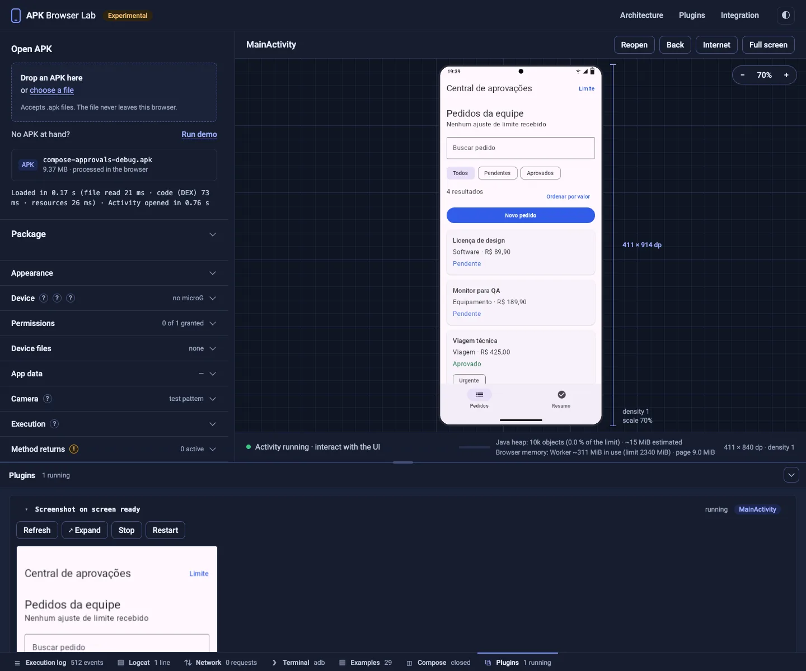
Filtered logs
Keeps the last 100 Logcat lines whose tag or message matches a regular expression.
const FILTER = /error|exception|warn/i; // edit the expression
const MAX = 100;
const lines = [];
let total = 0;
lab.on('log', batch => {
for (const line of batch) {
if (!FILTER.test(line.tag + ' ' + line.message)) continue;
total++;
lines.push({ time: new Date(line.wall).toLocaleTimeString(), level: line.level, tag: line.tag, message: line.message });
}
if (lines.length > MAX) lines.splice(0, lines.length - MAX);
lab.ui.badge(String(total));
lab.ui.table(lines.slice().reverse(), ['time', 'level', 'tag', 'message'], { id: 'lines' });
});
lab.ui.text('Waiting for lines that match ' + FILTER + '…', { id: 'lines' });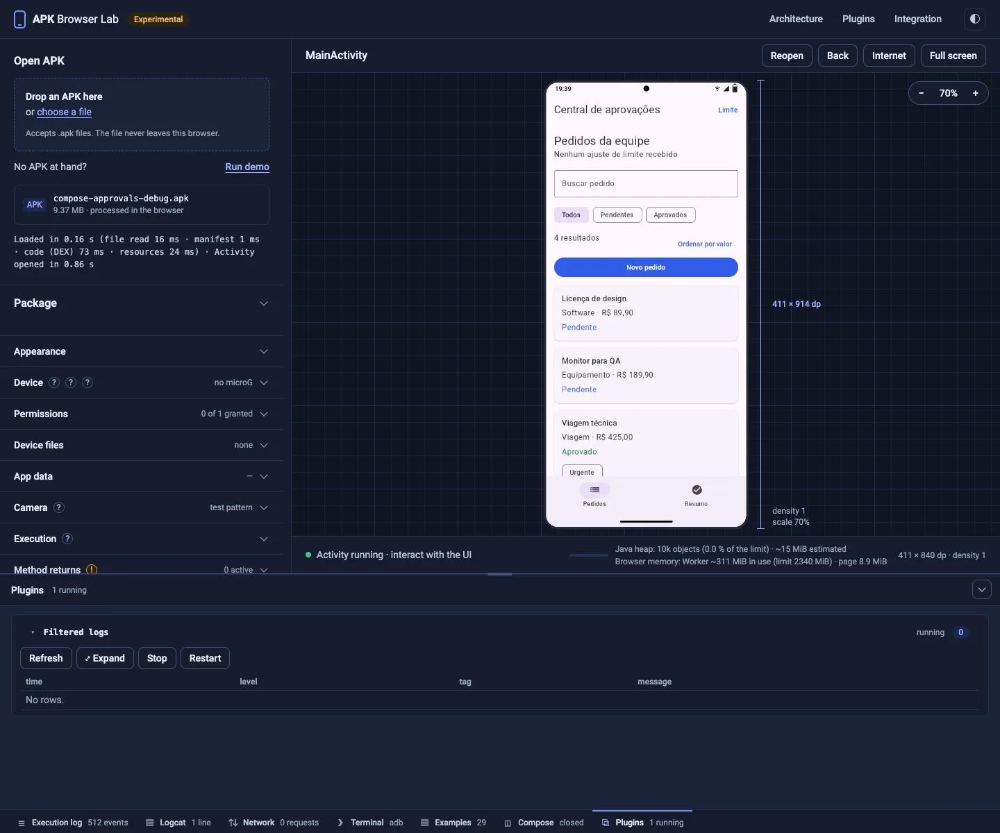
Observe a ViewModel field
Takes the app's first ViewModel on the screen and shows a field live. When the object is collected or the screen changes, it looks again.
const FIELD = 'state.value'; // a path: 'counter', 'items.size', 'state.value'
let stop = null, current = null;
async function connect() {
const list = await lab.viewModels();
const vm = list.find(item => !item.library) ?? list[0];
if (vm?.handle === current) return;
stop?.(); stop = null; current = vm?.handle ?? null;
if (!vm) { lab.ui.text('No ViewModel on the screen.', { id: 'value' }); return; }
lab.ui.badge(vm.className.split('.').pop());
stop = lab.watch(vm.handle, FIELD, value => lab.ui.json(value, { id: 'value' }), {
intervalMs: 250,
onError: error => { if (error.code === 'collected') { current = null; connect(); } else lab.ui.text(error.message, { id: 'value' }); },
});
}
lab.on('screen', () => connect().catch(error => lab.ui.text(error.message, { id: 'error' })));
await connect();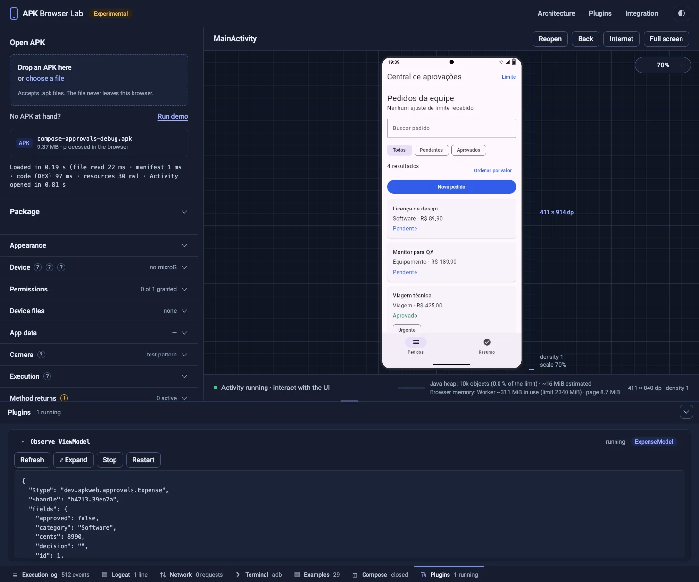
FIELD = 'orders.0').Compose tree summary
Lists only the Compose nodes with text, a role or a testTag. The tree costs tens of milliseconds on the VM, so it is read on every screen change and at most every 2 s.
async function show() {
const tree = await lab.composeTree();
if (!tree.owners.length) { lab.ui.text('The screen has no Compose.', { id: 'tree' }); return; }
const nodes = tree.owners.flatMap(owner => owner.nodes)
.filter(node => node.texts.length || node.editableText !== null || node.role || node.testTag);
lab.ui.badge(`${nodes.length}/${tree.totalNodes} nodes`);
lab.ui.table(nodes.slice(0, 150).map(node => ({
level: node.depth, name: node.name,
text: (node.editableText ?? node.texts.join(' ')).slice(0, 60),
tag: node.testTag ?? '', actions: node.actions.join(' '),
})), ['level', 'name', 'text', 'tag', 'actions'], { id: 'tree' });
}
lab.on('screen', () => show().catch(() => {}));
setInterval(() => show().catch(() => {}), 2000);
await show();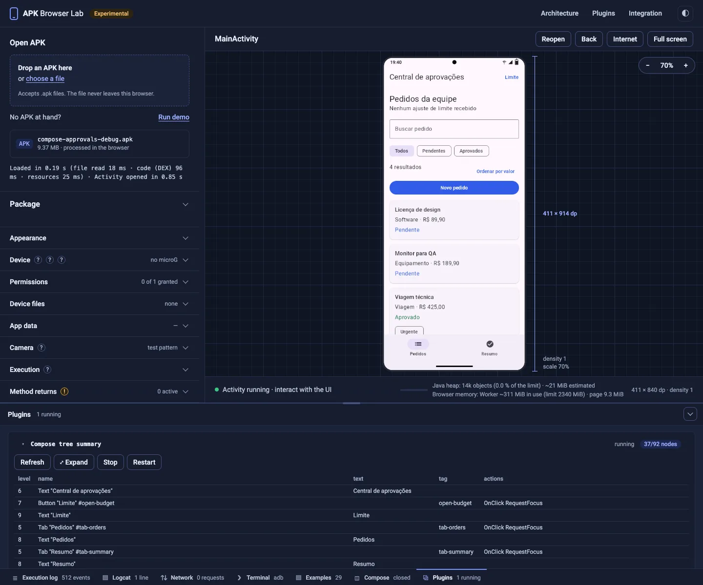
Component crops
Lists the Compose boxes with name and position and shows the crop of the first ones. Since each crop waits 500 ms for its turn, only the first ones get an image.
const LIMIT = 6;
let round = 0;
async function show() {
const mine = ++round;
const boxes = (await lab.layoutBounds()).filter(box => box.kind === 'compose');
lab.ui.clear();
lab.ui.badge(String(boxes.length));
lab.ui.table(boxes.map(box => ({ name: box.name, x: box.bounds.left, y: box.bounds.top, width: box.size.width, height: box.size.height })),
['name', 'x', 'y', 'width', 'height'], { id: 'list' });
for (const box of boxes.slice(0, LIMIT)) {
if (mine !== round) return; // the screen changed: the next round starts over
try { lab.ui.image(await lab.screenshot({ key: box.key, maxWidth: 360 }), { id: box.key, caption: box.name }); }
catch (error) { lab.ui.text(box.name + ': ' + error.message, { id: box.key }); }
}
}
lab.on('screen', () => show().catch(error => lab.ui.text(error.message, { id: 'error' })));
await show();Highlight and capture by id
Replace the ids with your app's: a Compose testTag or a View's android:id. The bounds stay drawn on the device and follow the component; the screenshot appears on the card.
const IDS = ['save', 'title']; // testTag (Compose) or android:id (View)
const COLORS = ['#ff3d7f', '#00c853', '#2979ff', '#ff9100'];
async function show() {
await lab.highlights.clear();
lab.ui.clear();
for (const [i, id] of IDS.entries()) {
const found = await lab.find(id);
if (!found.length) { lab.ui.text(id + ': not on this screen', { id }); continue; }
await lab.highlight(id, { id, color: COLORS[i % COLORS.length], label: id, all: true });
try {
const shot = await lab.capture(id, { padding: 4, maxWidth: 360 });
lab.ui.image(shot, { id, caption: id + ' · ' + shot.element.name + ' · ' + shot.width + ' × ' + shot.height });
} catch (error) { lab.ui.text(id + ': ' + error.message, { id }); }
}
}
lab.on('ready', () => show().catch(error => lab.ui.text(error.message, { id: 'error' })));
await lab.button({ label: 'Clear highlights', icon: '✕' }, () => lab.highlights.clear());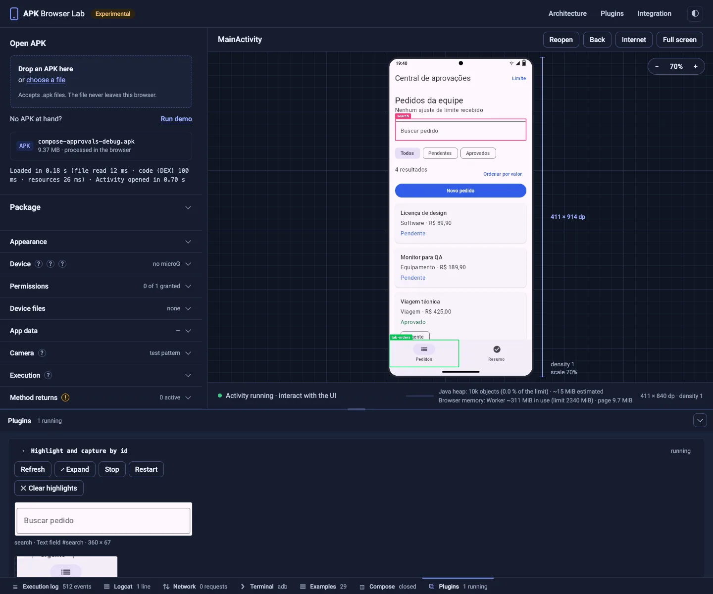
IDS = ['search', 'tab-orders']).Screen components
The boxes of "Show layout bounds" with name, position and the crop of each one.
// Screen components: the boxes of "Show layout bounds", with the crop of each one
// (lab.screenshot crops from the frame the page shows; at most one crop every 500 ms, so only the first LIMIT get an image).
const LIMIT = 8;
let round = 0;
async function show() {
const mine = ++round;
const boxes = (await lab.layoutBounds()).filter(box => box.kind === 'compose');
lab.ui.clear(); lab.ui.badge(String(boxes.length));
lab.ui.table(boxes.map(box => ({ name: box.name, x: box.bounds.left, y: box.bounds.top, width: box.size.width, height: box.size.height, tag: box.testTag ?? '' })), ['name', 'x', 'y', 'width', 'height', 'tag'], { id: 'list' });
for (const box of boxes.slice(0, LIMIT)) {
if (mine !== round) return; // the screen changed: the next round starts over
try { lab.ui.image(await lab.screenshot({ key: box.key, maxWidth: 360 }), { id: box.key, caption: box.name }); }
catch (error) { lab.ui.text(box.name + ': ' + error.message, { id: box.key }); }
}
}
lab.on('screen', () => show().catch(error => lab.ui.text(error.message, { id: 'error' })));
await show();
Panel in a window
Opens a small window with a layout of its own: the screen's screenshot, the ViewModels and a button that reloads the screen. The HTML talks to the plugin through messages.
const win = await lab.modal.open({ title: 'Panel', size: 'medium', html: '<p>Loading…</p>' });
async function draw() {
const screen = await lab.waitReady({ timeoutMs: 20000 }).catch(() => null);
const image = await lab.dataUrl(await lab.screenshot({ maxWidth: 240 }));
const vms = (await lab.viewModels()).filter(vm => !vm.library).map(vm => vm.className.split('.').pop());
await win.update({ html: `
<style>body{font:14px system-ui;margin:16px;display:flex;gap:16px} img{border-radius:12px;box-shadow:0 2px 8px #0003}</style>
<img src="${image}" width="240">
<div><h3>${screen?.activity ?? 'no screen ready'}</h3><p>ViewModels: ${vms.join(', ') || 'none'}</p>
<button onclick="lab.post('reload')">Reload the screen</button></div>` });
}
win.onMessage(async request => { if (request === 'reload') { await lab.reload('recreate'); await draw(); } });
await draw();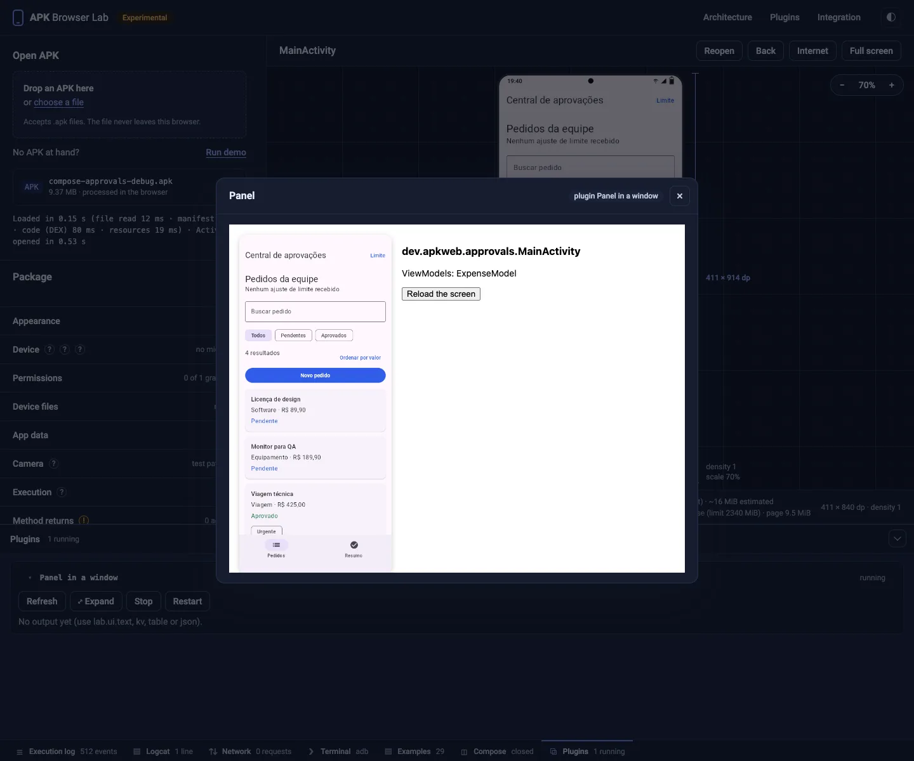
Mock from the plugin
Answers an endpoint without going to the network and reloads the screen so the app fetches again.
const { id } = await lab.mock({ id: 'profile', method: 'GET', url: 'https://api.example.com/v1/profile', status: 200,
headers: { 'Content-Type': 'application/json' }, body: { name: 'Ana', plan: 'premium' } });
await lab.reload('reopen');
lab.ui.kv({ mock: id, active: (await lab.mocks()).length });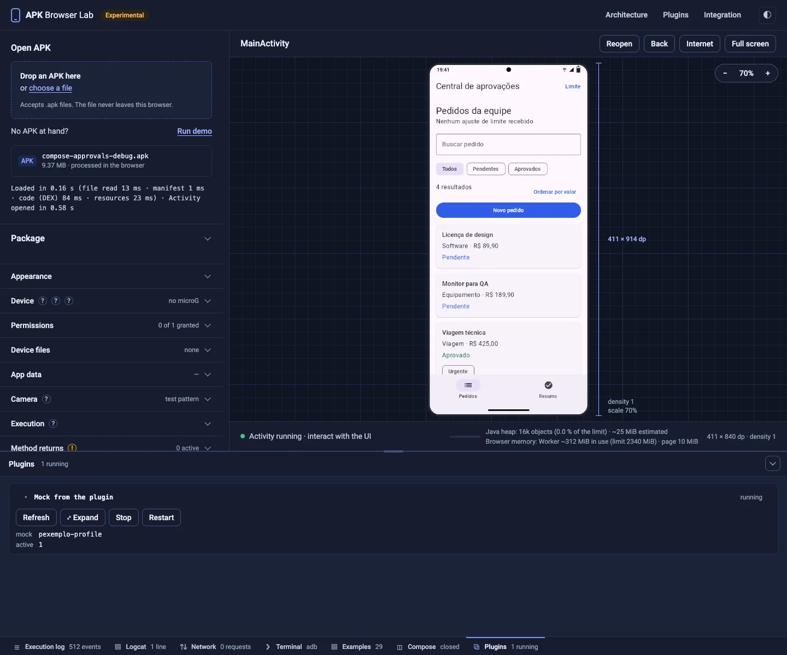
Watch and change a method
Observes a static method's calls in a table, then, with buttons, fixes what it returns or replaces its body with smali. Each change shows on the page as App modified and goes when the plugin stops. Name a method of your app instead of the example one.
const method = 'Lcom/example/app/Rules;->isEnabled(Ljava/lang/String;)Z'; // static boolean isEnabled(String)
const rows = [];
lab.on('call', call => {
rows.unshift({ args: JSON.stringify(call.args), result: JSON.stringify(call.thrown ?? call.returned), ms: call.ms, thread: call.thread });
rows.length = Math.min(rows.length, 20);
lab.ui.table(rows, ['args', 'result', 'ms', 'thread'], { id: 'calls' });
});
const watch = await lab.hook(method, { observe: true });
lab.ui.text(`Observing ${watch.method}`, { id: 'state' });
await lab.button({ label: 'Always true' }, async () => {
const fixed = await lab.hook(method, { returns: true }); // the plugin's second change of the method replaces its first
lab.ui.text(`${fixed.method} returns ${fixed.value}`, { id: 'state' });
});
await lab.button({ label: 'Smali body' }, async () => {
try {
await lab.hook(method, { smali: `.registers 3
const-string v0, "beta_"
invoke-virtual {p0, v0}, Ljava/lang/String;->startsWith(Ljava/lang/String;)Z
move-result v0
return v0` });
lab.ui.text('isEnabled(name) is now name.startsWith("beta_")', { id: 'state' });
} catch (error) { lab.ui.json(error.errors ?? error.message, { id: 'state' }); } // the verifier's errors, each with its line
});
await lab.button({ label: 'Original' }, async () => {
for (const change of await lab.hooks()) await lab.unhook(change.id);
lab.ui.text('Original method', { id: 'state' });
});Breakpoint with a report
Stops at a source line of the app's code, writes the stopped method, the stack and the locals on the card, then lets the app go on. Change CLASS and LINE (the .line numbers in the Code tool's smali). The breakpoint shows in the Code tool's list with the plugin's name and goes when the plugin stops.
const CLASS = 'com.example.app.MainActivity', LINE = 42;
const bp = await lab.debug.setBreakpoint({ className: CLASS, line: LINE });
lab.ui.text(`Waiting at ${bp.where}${bp.resolved ? '' : ' (pending until the class runs)'}`, { id: 'state' });
lab.on('debug', async event => {
if (event.type !== 'paused' || !event.reasons?.some(reason => reason.id === bp.id)) return;
const frames = await lab.debug.frames({ thread: event.thread });
const locals = await lab.debug.locals({ thread: event.thread });
lab.ui.text(`${event.location.methodName} line ${event.location.line} (${event.mode})`, { id: 'state' });
lab.ui.table(frames.frames.map(f => ({ method: f.host ? 'host code' : `${f.className}.${f.methodName}`, line: f.line ?? '' })), { id: 'stack' });
lab.ui.table(locals.locals.map(l => ({ name: l.name, type: l.type, value: JSON.stringify(l.value) })), { id: 'locals' });
if (event.held) await lab.debug.resume();
});Scroll to the middle or to a position
Scrolls the main list to 50 % and then to 300 px from the start, through the app's own scrolling, and shows where it stopped. In the lab, 1 px = 1 dp.
await lab.waitReady({ timeoutMs: 20000 });
const middle = await lab.scrollToPercent(50);
lab.ui.kv({ list: middle.element, position: `${middle.y} of ${middle.maxY} px`, percent: `${middle.percentY} %`, reached: middle.reached }, { id: 'middle' });
// To a position. For another list, name the target: { y: 300, target: { testTag: 'my-list' } }
const point = await lab.scrollTo({ y: 300 });
lab.ui.kv({ position: `${point.y} px`, reached: point.reached, via: point.via }, { id: 'point' });
// Refresh on the card shows where the scroll is now
lab.on('refresh', async () => lab.ui.json(await lab.scrollInfo(), { id: 'now' }));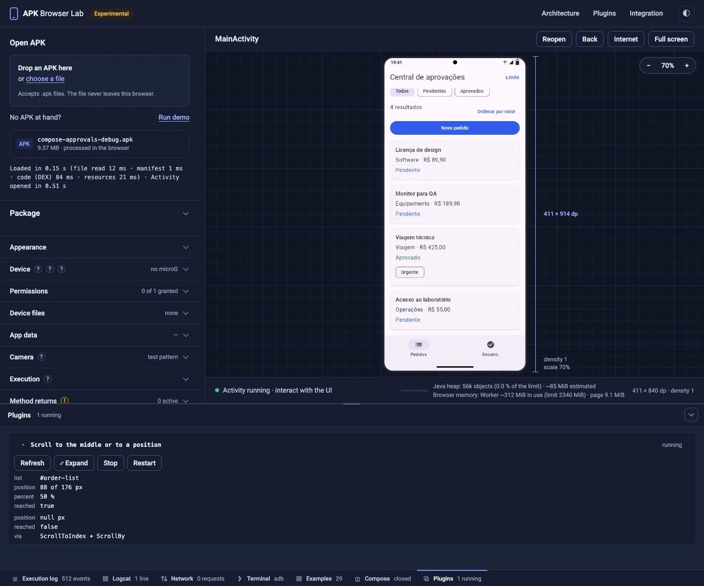
Side tab
A handle on the right with buttons that scroll the app. The panel is your own HTML and talks to the plugin through messages; the tab remembers whether it was left open.
const tab = await lab.tab.open({ title: 'Scroll', icon: '↕', side: 'right', width: 260, height: '40%', mode: 'overlay', trigger: 'click', open: true, remember: true, html: `
<style>body{font:13px system-ui;margin:12px} button{margin:0 6px 6px 0;padding:6px 10px} p{color:#555}</style>
<button onclick="lab.post(0)">Top</button><button onclick="lab.post(50)">Middle</button><button onclick="lab.post(100)">End</button>
<p id="status">—</p>
<script>lab.on(text => { document.getElementById('status').textContent = text; });</script>` });
tab.onMessage(async percent => {
await tab.post('Scrolling…');
const where = await lab.scrollToPercent(percent).catch(error => ({ error: error.message }));
await tab.post(where.error ?? `${where.element}: ${where.percentY} %`);
});
tab.onToggle((isOpen, by) => lab.ui.text(`tab ${isOpen ? 'open' : 'collapsed'} (${by})`, { id: 'tab' }));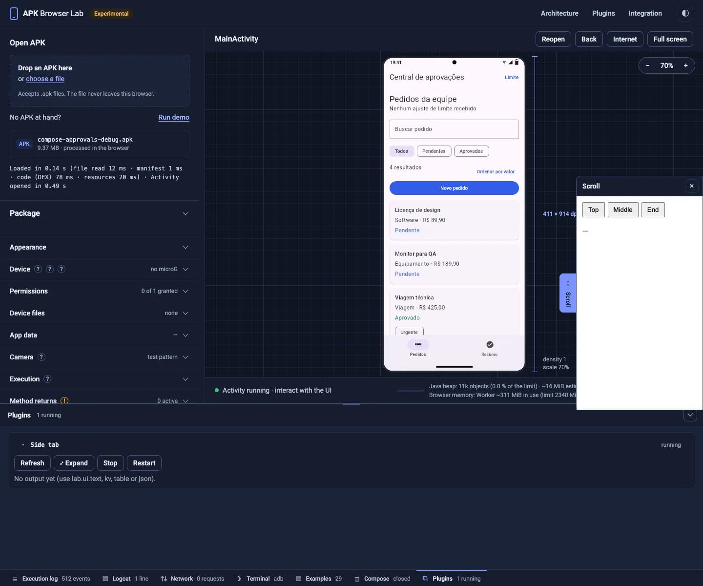
Plugin buttons
Three buttons with no HTML at all: two on the plugin's card (and on its row in Controls › Extensions › Plugins), one that scrolls the list to the end and another that takes a screenshot and reports its size, and one in the device bar that changes its own text on every click.
await lab.button({ id: 'end', label: 'Go to the end', icon: '⤓', title: 'Scrolls the largest list on the screen to the end' }, async () => {
const where = await lab.scrollToPercent(100);
lab.ui.kv({ list: where.element, percent: `${where.percentY} %`, reached: where.reached }, { id: 'scroll' });
});
await lab.button({ id: 'screenshot', label: 'Screenshot', icon: '📷', variant: 'primary' }, async () => {
const shot = await lab.screenshot({ maxWidth: 480 });
lab.ui.text(`Screenshot: ${shot.width} × ${shot.height} px, ${(shot.blob.size / 1024).toFixed(1)} KiB`, { id: 'size' });
lab.ui.image(shot, { id: 'screenshot' });
});
let on = false;
await lab.button({ id: 'toggle', label: 'Mode: off', icon: '○', placement: 'toolbar', title: 'Changes its own text' }, async ({ button }) => {
on = !on;
await button.update({ label: `Mode: ${on ? 'on' : 'off'}`, icon: on ? '●' : '○' });
});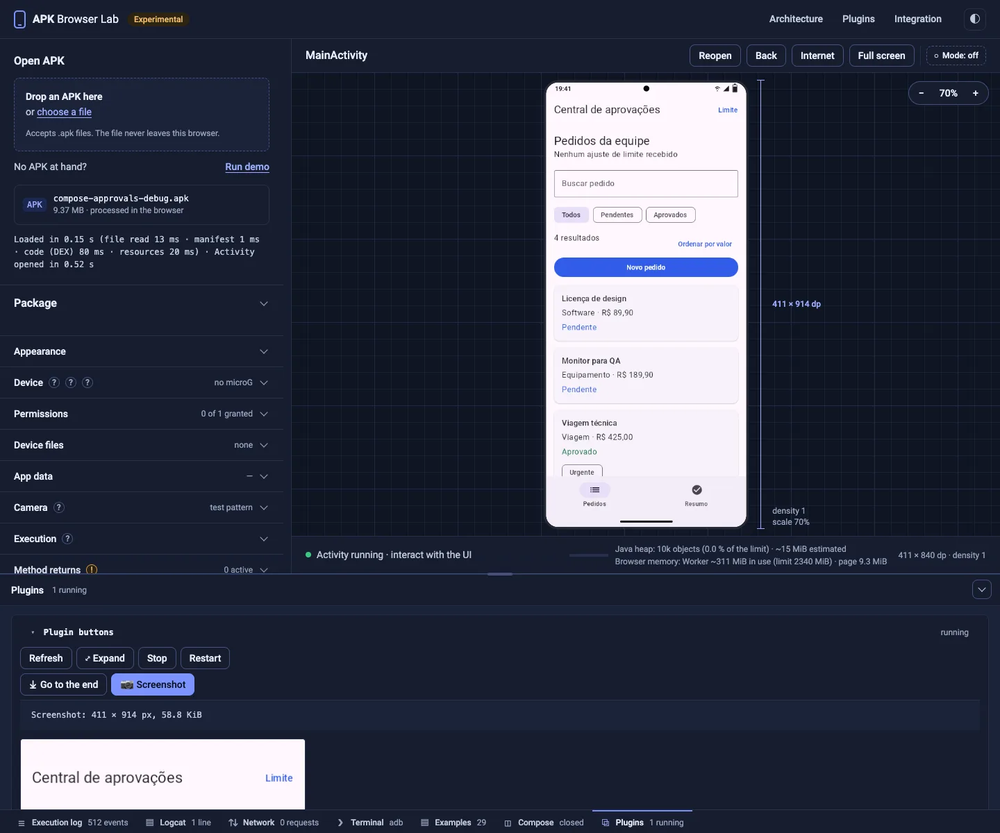
Drag palette
A tab with items that you drag onto the device; the plugin receives where each one landed, in px, dp and percentage of the screen, and the component that was underneath. Each item has a thumb field for a thumbnail (a data: URL): here the first item's comes from a crop of the screen, and any other image of the component goes in the same field.
const items = [{ id: 'tap', name: 'Tap', thumb: null }, { id: 'note', name: 'Note', thumb: null }];
const tab = await lab.tab.open({ title: 'Palette', icon: '🧩', side: 'left', width: 220, height: 380, open: true, html: `
<style>body{font:13px system-ui;margin:10px} .item{display:flex;align-items:center;gap:8px;padding:8px;margin-bottom:8px;border:1px solid #ccd;border-radius:8px;background:#f6f6fb}
.item img,.item i{width:32px;height:32px;border-radius:6px;background:#dcdcf5;object-fit:cover} #where{font:11px ui-monospace,monospace}</style>
<div id="palette"></div><p id="where">Drag an item onto the device.</p>
<script>
const palette = document.getElementById('palette'), where = document.getElementById('where');
lab.on(items => { // the plugin sends the list; each item becomes a draggable element
palette.replaceChildren(...items.map(item => {
const el = document.createElement('div'); el.className = 'item';
el.append(item.thumb ? Object.assign(new Image(), { src: item.thumb }) : document.createElement('i'), item.name);
lab.draggable(el, { id: item.id }, { label: item.name });
return el;
}));
});
lab.onDrag(e => { where.textContent = e.type === 'cancel' ? 'Canceled.' : e.inside ? e.x + ', ' + e.y + ' px' : 'Off screen'; });
lab.onDrop(e => { where.textContent = e.inside ? 'Dropped at ' + e.percentX + ' %, ' + e.percentY + ' %' : 'Dropped off screen.'; });
</script>` });
await tab.post(items);
// On drop, the plugin decides what to do: here it only takes a note; it could call lab.mock, lab.scrollTo…
tab.onDrop(dropped => lab.ui.kv({ item: dropped.payload.id, 'on screen': dropped.inside, px: `${dropped.x}, ${dropped.y}`, dp: `${dropped.dpX}, ${dropped.dpY}`,
percent: `${dropped.percentX} %, ${dropped.percentY} %`, over: dropped.element?.name ?? '—' }, { id: 'dropped' }));
// Thumbnail of the first item: a crop of the first clickable component on the screen
const clickable = (await lab.layoutBounds({ names: false })).find(e => e.actions.includes('OnClick'));
if (clickable) { items[0].thumb = await lab.dataUrl(await lab.screenshot({ key: clickable.key, maxWidth: 64 })); await tab.post(items); }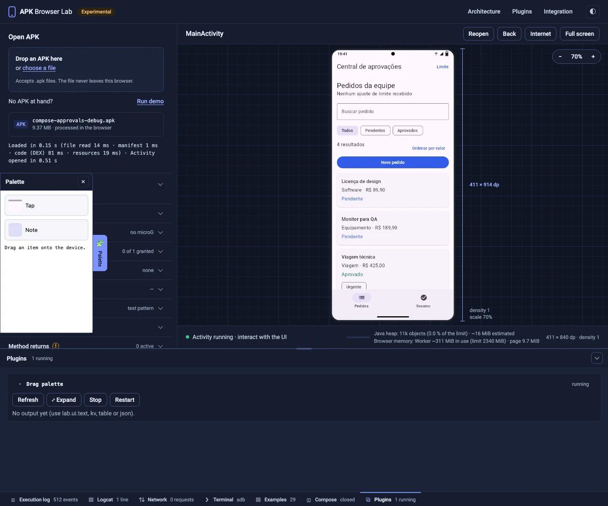
Screen components palette
A tab whose items are real components of the screen: lab.renderVariant renders the current screen in a second instance in the background (with other endpoint mocks, if you want another state) and returns one crop per component. Each crop becomes an item that you drag onto the device, with its own image following the pointer; the tab shows where it landed. A crop with no image appears with the reason.
const ROLES = ['Switch', 'Checkbox', 'Button']; // what to crop; a selector also accepts name, testTag, text, contentDescription, viewId
const LIMIT = 8;
const tab = await lab.tab.open({ title: 'Components', icon: '🎨', side: 'left', width: 250, height: '80%', open: true, html: `
<style>body{font:13px system-ui;margin:10px} .item{padding:6px;margin-bottom:8px;border:1px solid #ccd;border-radius:8px;background:#f6f6fb}
.item img{display:block;max-width:100%;max-height:80px;pointer-events:none} .item small{color:#667} .error small{color:#a33} #where{font:11px ui-monospace,monospace;white-space:pre-wrap}</style>
<p id="where">Rendering the screen in the background…</p><div id="palette"></div>
<script>
const palette = document.getElementById('palette'), where = document.getElementById('where');
lab.on(items => { // each crop becomes an item; those with an image can be dragged, with the image itself following the pointer
where.textContent = 'Drag a component onto the device.';
palette.replaceChildren(...items.map(item => {
const el = document.createElement('div'); el.className = item.image ? 'item' : 'item error';
if (item.image) { el.append(Object.assign(new Image(), { src: item.image })); lab.draggable(el, { name: item.name }, { label: item.name, image: item.image }); }
el.append(Object.assign(document.createElement('small'), { textContent: item.image ? item.name : item.name + ': ' + item.error }));
return el;
}));
});
lab.onDrop(e => { where.textContent = !e.inside ? 'Dropped off screen.' : e.payload.name + '\\npx: ' + e.x + ', ' + e.y + '\\ndp: ' + e.dpX + ', ' + e.dpY
+ '\\n%: ' + e.percentX + ', ' + e.percentY + '\\nover: ' + (e.element ? e.element.texts[0] || e.element.role || e.element.name : '—'); });
</script>` });
await lab.waitReady({ timeoutMs: 20000 }).catch(() => null);
// One render of the current screen in a second instance, which does not appear; all the crops come from it
const variant = await lab.renderVariant({
// endpointMocks: [{ url: 'https://api.example.com/v1/items', body: '{"items":[]}' }], // the same components with another server response
crops: ROLES.map(role => ({ selector: { role }, all: true })),
tree: true, // with the Compose tree each crop comes with the component's name (Button "Save")
});
const items = [];
for (const crop of variant.images.slice(0, LIMIT)) items.push({
name: crop.element?.name ?? JSON.stringify(crop.selector),
image: crop.image ? await lab.dataUrl(crop.image) : null, // without an image, the crop carries the reason (crop-not-found, no-image…)
error: crop.error?.message,
});
await tab.post(items);
lab.ui.kv({ crops: variant.images.length, 'screen settled': variant.settled, 'time (ms)': variant.ms.total }, { id: 'palette' });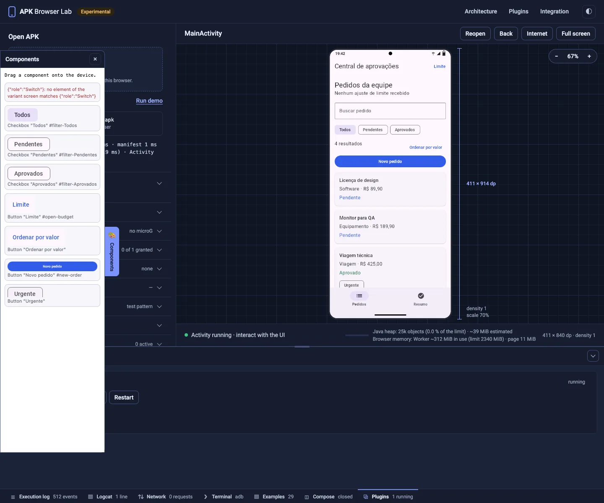
Device frame
A label under the device with its size and scale, placed on the page by the lab. It follows the device when it changes scale or goes full screen; the card shows where the screen is on the page, on every change (lab.on('frame')).
// A label under the device with its size and scale; it follows the device, and the card shows the position on the page
const label = await lab.overlay.open({ id: 'frame', anchor: 'screen', placement: 'bottom', align: 'center', offset: 10, interactive: false, html: `
<style>body{font:600 12px system-ui;color:#fff;background:#3b5bdb;padding:5px 12px;border-radius:999px;white-space:nowrap}</style>
<span id="text">…</span>
<script>lab.on(f => { document.getElementById('text').textContent = f.device.width + ' × ' + f.device.height + ' dp · scale ' + Math.round(f.scale * 100) + ' %'; });</script>` });
function show(f) {
if (!f.visible) return lab.ui.text('The device is not on the page.', { id: 'frame' });
label.post(f);
lab.ui.kv({ device: `${f.device.width} × ${f.device.height} dp`, 'on the page': `${Math.round(f.screen.width)} × ${Math.round(f.screen.height)} px at ${Math.round(f.screen.x)}, ${Math.round(f.screen.y)}`,
'app window': `${Math.round(f.window.width)} × ${Math.round(f.window.height)} px`, scale: f.scale, orientation: f.orientation }, { id: 'frame' });
}
lab.on('frame', show); // the device changed place or size (zoom, full screen, the browser window)
show(await lab.frame());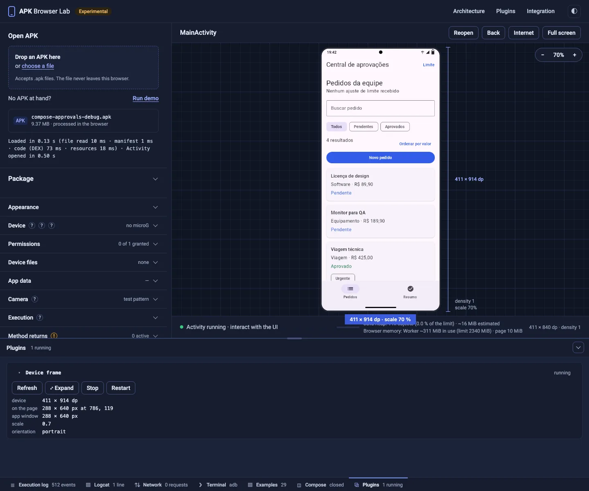
Reload button next to the device
A button of your own HTML, next to the device, that calls a method of the screen's ViewModel through the app's own code (lab.invoke). Replace METHOD and ARGS with your app's; if the method does not exist, the panel lists the ones that can be called.
// The screen's ViewModel method that reloads the data in your app, and its arguments
const METHOD = 'reload', ARGS = [];
const panel = await lab.overlay.open({ id: 'reload', anchor: 'screen', placement: 'right', align: 'start', offset: 14, html: `
<style>body{font:13px system-ui} button{font:600 13px system-ui;padding:9px 14px;border:0;border-radius:10px;background:#2f9e44;color:#fff;cursor:pointer}
button:disabled{opacity:.6} p{margin:6px 2px 0;max-width:230px;padding:6px 8px;border-radius:8px;background:#fff;color:#333;font-size:11px;box-shadow:0 1px 4px #0002}
p:empty{display:none}</style>
<button id="button">↻ Reload</button><p id="status"></p>
<script>
const button = document.getElementById('button'), note = document.getElementById('status');
button.onclick = () => { button.disabled = true; note.textContent = 'Calling…'; lab.post('reload'); };
lab.on(text => { button.disabled = false; note.textContent = text; });
</script>` });
panel.onMessage(async () => {
const [vm] = (await lab.viewModels()).filter(item => !item.library);
if (!vm) return panel.post('No app ViewModel on this screen.');
const cls = vm.className.split('.').pop();
try {
const done = await lab.invoke(vm.handle, METHOD, ARGS); // the app's bytecode, on the main thread, like a click
panel.post(`${cls}.${METHOD}() in ${done.ms} ms`);
lab.ui.kv({ called: done.method, returned: JSON.stringify(done.value), ms: done.ms }, { id: 'last' });
} catch (error) {
if (error.code !== 'no-method' && error.code !== 'bad-args') return panel.post(error.message);
const { methods } = await lab.methods(vm.handle); // what can be called on this ViewModel
panel.post(`${cls} has no ${METHOD}(${ARGS.length ? '…' : ''}). Available: ${methods.map(m => `${m.name}(${m.parameters.map(t => t.split('.').pop()).join(', ')})`).join(', ')}`);
}
});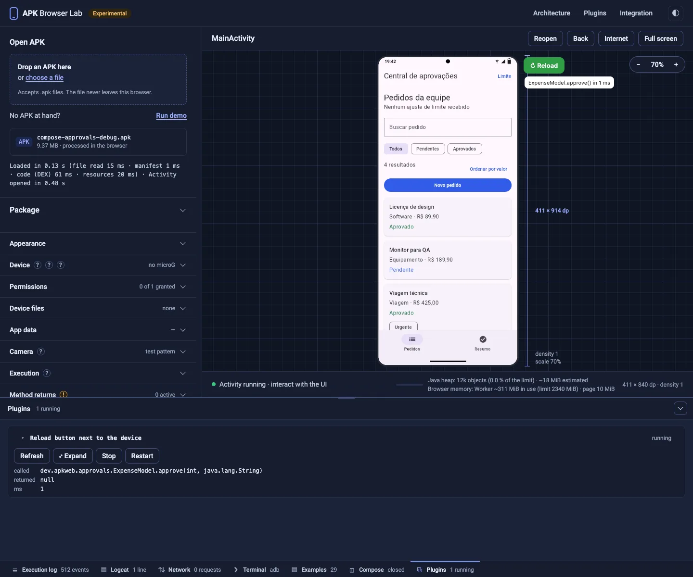
METHOD = 'approve' and ARGS = [1, 'Aprovado pelo plugin'], and the first order changed to Aprovado (Approved).Tip on a component
A tip above a component drawn by Skia (Compose), which follows it when the list scrolls and disappears when it leaves the screen. The tip's text comes from lab.track: the component's size and position on every frame. With interactive: false the touch passes through the tip and reaches the app.
const TARGET = 'search'; // the component: a testTag, an android:id, { text: '…' }, { role: 'Button' }…
const tip = await lab.overlay.open({ id: 'tip', anchor: TARGET, placement: 'top', interactive: false, html: `
<style>body{font:12px system-ui;color:#fff;background:#202124;padding:6px 10px;border-radius:7px;white-space:nowrap} b{color:#8ab4f8}</style>
<b id="name"></b> <span id="sizes"></span>
<script>lab.on(e => { document.getElementById('name').textContent = e.name; document.getElementById('sizes').textContent = e.sizes; });</script>` });
// The tip follows the component by itself; the tracker brings the measurements for its text and for the card
await lab.track(TARGET, ({ visible, elements: [e] }) => {
if (!visible) return lab.ui.text(`${TARGET}: off screen`, { id: 'where' });
const b = e.bounds;
tip.post({ name: e.testTag ?? e.name ?? e.key, sizes: `${b.right - b.left} × ${b.bottom - b.top} dp · y ${b.top}` });
lab.ui.kv({ component: e.key, window: `${b.left}, ${b.top} → ${b.right}, ${b.bottom} dp`, page: `${Math.round(e.rect.x)}, ${Math.round(e.rect.y)} px` }, { id: 'where' });
});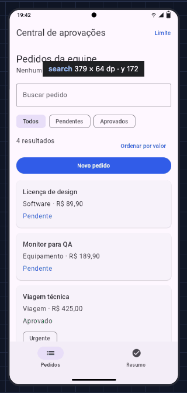
Note that scrolls with an item
A note of your own HTML pinned to an item in the app's list, in the margin beside it. It scrolls with the item, in the same frame, disappears when the item leaves the screen and comes back with it; what you type in the note reaches the plugin. The item is any target: its text, a testTag, an android:id.
// A note pinned to a list item: it scrolls with the item, disappears when it leaves the screen and comes back with it
const ITEM = { text: 'Pedido 42' }; // the item: its text, a testTag, { viewId: '…' }, { role: 'Button', index: 2 }
const note = await lab.overlay.open({ id: 'note', anchor: ITEM, placement: 'right', align: 'center', offset: 20, html: `
<style>body{font:12px system-ui} .note{display:flex;align-items:center;gap:6px;padding:6px 10px;border-radius:4px 10px 10px 4px;background:#ffd43b;color:#3d2c00;box-shadow:0 2px 6px #0003}
input{font:inherit;width:120px;border:0;background:transparent;color:inherit;outline:none}</style>
<div class="note">📌 <input id="text" placeholder="Write a note here…"></div>
<script>
const text = document.getElementById('text');
text.oninput = () => lab.post(text.value); // what you type goes to the plugin
lab.on(value => { text.value = value; }); // and the plugin can fill in the note
</script>` });
note.onMessage(value => lab.ui.kv({ note: value }, { id: 'note' }));
await note.post('review the amount');
// The note follows the item by itself, frame by frame; the tracker only shows on the card where it is
await lab.track(ITEM, ({ visible, elements: [e] }) => lab.ui.kv({
item: visible ? `y ${e.bounds.top} dp in the window · ${Math.round(e.rect.y)} px on the page` : 'off screen',
}, { id: 'where' }));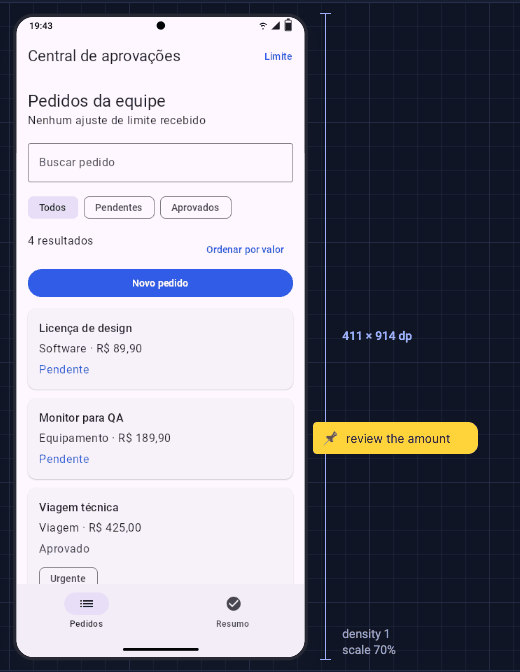
ITEM = { text: 'Monitor para QA' }): the list scrolls down and back, and the note follows the item.API proxy
Every request of the app goes through the plugin: the card lists them with their status and time, and the rules at the top change the ones they name: a field of the real JSON response, an answer of your own, an extra header, or a blocked call. Uncomment a rule and save to try it.
// API proxy (a plugin for Controls › Extensions › Plugins: paste this file as the plugin's code).
// Every request of the app goes through this plugin (lab.route): it lists them with their status and time, and the RULES below change the ones they name:
// { url, method, set: { 'a.b': value } } fetch the real response and change fields of its JSON
// { url, method, json: {...} | body, status } answer with this response (the request never goes to the network)
// { url, method, headers: {...} } add or replace request headers, then let the request go on
// { url, method, block: 'connection' } fail the request ('connection', 'reset', 'timeout', 'unknown-host')
// url uses the endpoint mocks' patterns: 'https://api.example.com/v1/**', '/v1/users/*' (any host). The first rule that matches wins; the rest go on unchanged.
// Each routed request is marked [ROUTE] in the network log, and the routes are listed in the Resumo. Stopping the plugin removes them.
const RULES = [
// { url: '/v1/profile', method: 'GET', set: { 'user.premium': true } },
// { url: '/v1/flags', json: { newCheckout: true }, status: 200 },
// { url: '/v1/**', headers: { 'X-Debug': '1' } },
// { url: '/v1/ads/**', block: 'connection' },
];
const MAX_ROWS = 100;
const rows = [];
let paused = false;
const glob = pattern => { // the same shapes as the route filter, for picking the rule inside the handler
const [, scheme, host, path] = /^(?:(https?):\/\/([^/]+))?(\/.*)?$/.exec(pattern) ?? [];
const re = s => s.split('/').map(p => p === '**' ? '.*' : p.replace(/[.+?^${}()|[\]\\]/g, '\\$&').replaceAll('*', '[^/]*')).join('/');
return url => { const u = new URL(url); return (!scheme || u.protocol === scheme + ':') && (!host || new RegExp('^' + host.replace(/\./g, '\\.').replaceAll('*', '[^.]+') + '$').test(u.host)) && new RegExp('^' + re(path || '/**') + '$').test(u.pathname); };
};
const rules = RULES.map(rule => ({ ...rule, test: glob(rule.url ?? '/**'), method: String(rule.method ?? 'ANY').toUpperCase() }));
const setPath = (object, path, value) => { const keys = path.split('.'); let at = object; for (const key of keys.slice(0, -1)) at = at[key] ??= {}; at[keys.at(-1)] = value; };
function show() {
lab.ui.badge(String(rows.length));
lab.ui.table(rows.slice().reverse(), ['time', 'method', 'url', 'rule', 'status', 'ms'], { id: 'requests' });
}
function note(row) { if (paused) return; rows.push(row); if (rows.length > MAX_ROWS) rows.shift(); show(); }
await lab.route('*', async route => {
const { method, url } = route.request, started = Date.now();
const row = { time: new Date().toLocaleTimeString(), method, url, rule: '—', status: '…', ms: '' };
const rule = rules.find(r => (r.method === 'ANY' || r.method === method) && r.test(url));
try {
if (rule?.block) { row.rule = `block ${rule.block}`; await route.abort(rule.block); row.status = 'aborted'; }
else if (rule?.json !== undefined || rule?.body !== undefined) { row.rule = 'answer'; await route.fulfill({ status: rule.status ?? 200, ...(rule.json !== undefined ? { json: rule.json } : { body: rule.body }) }); row.status = rule.status ?? 200; }
else if (rule?.set) {
row.rule = 'change JSON';
const res = await route.fetch(); let json;
try { json = res.json(); } catch { await route.fulfill({ response: res }); row.status = `${res.status} (not JSON, unchanged)`; return; }
for (const [path, value] of Object.entries(rule.set)) setPath(json, path, value);
await route.fulfill({ response: res, json }); row.status = `${res.status} (changed)`;
}
else if (rule?.headers) { row.rule = 'headers'; await route.continue({ headers: { ...route.request.headers, ...rule.headers } }); row.status = 'sent'; }
else { await route.continue(); row.status = 'sent'; }
} catch (error) { row.status = `error: ${error.message}`; }
finally { row.ms = Date.now() - started; note(row); }
}, { name: 'API proxy' });
const pause = await lab.button({ id: 'pause', label: 'Pause list' }, () => { paused = !paused; pause.update({ label: paused ? 'Resume list' : 'Pause list' }); });
await lab.button({ id: 'clear', label: 'Clear' }, () => { rows.length = 0; show(); });
lab.ui.text(`${rules.length} rule(s) active; every other request goes on unchanged.`, { id: 'rules' });
show();
Dependency injection inspector
Finds which dependency injection libraries the app ships (Koin, Dagger / Hilt, Kodein, Toothpick, kotlin-inject, Metro, Guice) and lists what their containers hold right now: each binding, its kind (single, factory, scoped), whether the instance was already created, and its class and handle. DI window opens the full table in a window with a filter and an "only created" switch; Rescan DI reads again. Read-only: it never calls a container, so nothing is created by looking. Also in the repository as docs/plugins/di-inspector.js.
// Dependency injection inspector (a plugin for Controls › Extensions › Plugins: paste this file as the plugin's code).
// Finds which DI libraries the open app ships and lists what their containers hold right now: Koin (definitions, singletons created, scoped values), Dagger / Hilt
// (DoubleCheck and SingleCheck providers, created or not, and the generated components), Kodein (singletons and multitons), Toothpick (scopes and bindings) and
// kotlin-inject / Metro / Guice (components found). Read-only: it reads the fields the objects already have (lab.instances, lab.inspect, lab.field); it never calls
// a container (no koin.get, no component method), so nothing is created by looking. A minified app keeps the library's classes but may rename their fields: the
// plugin finds the parts by their types, not by field names. Button "DI window" opens the full table in a window with a filter.
const LIMIT = 400; // objects read per library
const libs = [
{ id: 'koin', name: 'Koin', marker: 'org.koin.core.Koin' },
{ id: 'dagger', name: 'Dagger / Hilt', marker: 'dagger.internal.DoubleCheck' },
{ id: 'kodein', name: 'Kodein', marker: 'org.kodein.di.DI' },
{ id: 'toothpick', name: 'Toothpick', marker: 'toothpick.Toothpick' },
{ id: 'kinject', name: 'kotlin-inject', marker: 'me.tatarka.inject.annotations.Component' },
{ id: 'metro', name: 'Metro', marker: 'dev.zacsweers.metro.DependencyGraph' },
{ id: 'guice', name: 'Guice', marker: 'com.google.inject.Injector' },
];
const short = type => String(type ?? '').replace(/^.*[.$](?=[^.$]+$)/, '');
const typeOf = value => value && typeof value === 'object' ? value.$type ?? value.$kind ?? 'object' : typeof value;
const describe = value => {
if (value === null || value === undefined) return '—';
if (typeof value !== 'object') return String(value).slice(0, 120);
if (value.$kind === 'enum') return value.name;
if (value.$kind) return `${value.$kind}${value.size !== undefined ? ` (${value.size})` : ''}`;
return value.$type ?? 'object';
};
/** Every object in an inspect result, depth first: [{ path, value }]. */
function walk(value, path = [], out = [], seen = new Set()) {
if (!value || typeof value !== 'object' || out.length > 5000) return out;
if (value.$handle) { if (seen.has(value.$handle)) return out; seen.add(value.$handle); }
out.push({ path, value });
if (value.fields) for (const [name, field] of Object.entries(value.fields)) walk(field, [...path, name], out, seen);
if (Array.isArray(value.items)) value.items.forEach((item, i) => walk(item, [...path, i], out, seen));
if (Array.isArray(value.entries)) value.entries.forEach(([key, item], i) => walk(item, [...path, `[${typeof key === 'object' ? describe(key) : key}]`], out, seen));
return out;
}
async function present(className) {
try { const found = await lab.classes(className, { limit: 5 }); return (found.items ?? []).find(item => item.className === className) ?? null; } catch { return null; }
}
async function allInstances(className, max = LIMIT) {
const items = []; let after = 0;
for (let page = 0; page < 40 && items.length < max; page++) {
let result; try { result = await lab.instances(className, { limit: Math.min(50, max - items.length), after }); } catch { break; }
items.push(...(result.items ?? [])); if (result.done || result.next === null || result.next === undefined) break; after = result.next;
}
return items;
}
async function inspectMany(handles, options) {
const out = [];
for (let i = 0; i < handles.length; i += 40) {
const results = await lab.batch(handles.slice(i, i + 40).map(handle => ['inspect', handle, options]));
for (const result of results) out.push(result.ok ? result.value : null);
}
return out;
}
// ---- Koin: Koin -> InstanceRegistry -> map of IndexKey ("type:qualifier:scope") to InstanceFactory (Single / Factory / Scoped), whose BeanDefinition says the kind
async function readKoin() {
const rows = [], koins = await allInstances('org.koin.core.Koin', 4);
for (const koin of koins) {
const tree = await lab.inspect(koin.handle, { depth: 3, maxItems: 2000, maxFields: 50, maxString: 300 });
const maps = walk(tree).filter(({ value }) => value.$kind === 'map' && (value.entries ?? []).some(([, item]) => /InstanceFactory/.test(item?.$type ?? '')));
for (const { value: map } of maps) {
const entries = (map.entries ?? []).slice(0, LIMIT);
const factories = await inspectMany(entries.map(([, item]) => item.$handle).filter(Boolean), { depth: 2, maxFields: 30, maxItems: 20, maxString: 200 });
entries.forEach(([key, item], i) => {
const factory = factories[i], kindName = /Single/.test(item.$type) ? 'single' : /Scoped/.test(item.$type) ? 'scoped' : /Factory/.test(item.$type) ? 'factory' : short(item.$type);
let instance = null, created = kindName === 'factory' ? 'per call' : 'not yet';
for (const [name, field] of Object.entries(factory?.fields ?? {})) {
if (/BeanDefinition/.test(field?.$type ?? '')) continue;
if (kindName === 'single' && field && typeof field === 'object' && field.$type && !/^kotlin\.jvm\.functions|Function|Lambda|\$\$/.test(field.$type)) { instance = field; created = 'created'; }
if (kindName === 'scoped' && field?.$kind === 'map') { created = `${field.size} scope(s)`; instance = (field.entries ?? [])[0]?.[1] ?? null; }
void name;
}
rows.push({ library: 'Koin', container: short(koin.className), key: typeof key === 'string' ? key : describe(key), kind: kindName, state: created, instance: instance ? describe(instance) : '—', handle: instance?.$handle ?? '' });
});
}
}
return rows;
}
// ---- Dagger / Hilt: each scoped binding is a DoubleCheck (or SingleCheck) provider; its instance field holds the object once created, a sentinel before
async function readDagger() {
const rows = [];
for (const provider of ['dagger.internal.DoubleCheck', 'dagger.internal.SingleCheck']) {
const found = await allInstances(provider);
const trees = await inspectMany(found.map(item => item.handle), { depth: 1, maxFields: 10, maxString: 200 });
trees.forEach((tree, i) => {
const fields = Object.values(tree?.fields ?? {}), held = fields.find(field => field && typeof field === 'object' && field.$type && field.$type !== 'java.lang.Object' && !/Provider|Factory_|_Factory|MembersInjector|^javax\.inject/.test(field.$type));
const inner = fields.find(field => /Provider|Factory/.test(field?.$type ?? ''));
rows.push({ library: 'Dagger / Hilt', container: short(provider), key: inner ? short(inner.$type) : '—', kind: provider.endsWith('DoubleCheck') ? 'scoped (DoubleCheck)' : 'single-check', state: held ? 'created' : 'not yet', instance: held ? describe(held) : '—', handle: held?.$handle ?? found[i].handle });
});
}
try {
const components = await lab.classes('/^Dagger[A-Za-z0-9_$]*Component$|_HiltComponents_|^Hilt_|_Impl$/', { limit: 60, initialized: true });
for (const item of components.items ?? []) if (/Dagger|Hilt/.test(item.className)) rows.push({ library: 'Dagger / Hilt', container: 'component class', key: item.className, kind: 'generated', state: item.status, instance: '—', handle: '' });
} catch { /* a regex the VM refused: the providers above still list the objects */ }
return rows;
}
// ---- Kodein: singletons and multitons keep their instance in a holder field
async function readKodein() {
const rows = [];
for (const binding of ['org.kodein.di.bindings.Singleton', 'org.kodein.di.bindings.Multiton', 'org.kodein.di.bindings.EagerSingleton']) {
const found = await allInstances(binding);
const trees = await inspectMany(found.map(item => item.handle), { depth: 2, maxFields: 20, maxString: 200 });
trees.forEach((tree, i) => {
const objects = walk(tree).slice(1).map(({ value }) => value).filter(value => value.$type && !/^org\.kodein|^kotlin\.|^java\.lang\.(Object|Class)$|Function|Lambda/.test(value.$type));
rows.push({ library: 'Kodein', container: short(binding), key: describe(tree?.fields?.createdType ?? tree?.fields?.type ?? Object.values(tree?.fields ?? {}).find(field => /TypeToken/.test(field?.$type ?? ''))), kind: short(binding).toLowerCase(), state: objects.length ? 'created' : 'not yet', instance: objects.length ? describe(objects[0]) : '—', handle: objects[0]?.$handle ?? found[i].handle });
});
}
return rows;
}
// ---- Toothpick: scopes and the bindings each holds
async function readToothpick() {
const rows = [], scopes = await allInstances('toothpick.ScopeImpl', 100);
const trees = await inspectMany(scopes.map(item => item.handle), { depth: 2, maxFields: 30, maxItems: 200, maxString: 200 });
trees.forEach((tree, i) => {
const maps = walk(tree).filter(({ value }) => value.$kind === 'map');
for (const { value: map } of maps) for (const [key, item] of map.entries ?? []) rows.push({ library: 'Toothpick', container: `scope ${describe(tree?.fields?.name)}`, key: describe(key), kind: short(item?.$type), state: '—', instance: describe(item), handle: item?.$handle ?? scopes[i].handle });
});
return rows;
}
async function readComponents(lib) {
const pattern = { kinject: '/^Inject[A-Za-z0-9_$]*Component$/', metro: '/\\$\\$Metro|MetroGraph/', guice: '/Injector|Module$/' }[lib.id];
const found = await lab.classes(pattern, { limit: 60 }).catch(() => ({ items: [] }));
return (found.items ?? []).map(item => ({ library: lib.name, container: 'class', key: item.className, kind: 'generated', state: item.status, instance: '—', handle: '' }));
}
let rows = [], detected = [], appName = null;
let running = null; // one scan at a time: 'ready' and Refresh can fire while one runs
function scan() { running ??= scanOnce().finally(() => { running = null; }); return running; }
async function scanOnce() {
lab.ui.text('Scanning…', { id: 'status' });
detected = [];
for (const lib of libs) { const cls = await present(lib.marker); if (cls) detected.push({ ...lib, status: cls.status }); }
const screen = await lab.screen(); appName = lab.info.packageName ?? screen.packageName ?? null;
lab.ui.kv({ app: appName ?? '—', activity: screen.activity ?? '—', 'DI libraries': detected.map(lib => `${lib.name} (${lib.status})`).join(', ') || 'none found' }, { id: 'summary' });
rows = [];
for (const lib of detected) {
try {
if (lib.id === 'koin') rows.push(...await readKoin());
else if (lib.id === 'dagger') rows.push(...await readDagger());
else if (lib.id === 'kodein') rows.push(...await readKodein());
else if (lib.id === 'toothpick') rows.push(...await readToothpick());
else rows.push(...await readComponents(lib));
} catch (error) { rows.push({ library: lib.name, container: '—', key: `could not read: ${error.message}`, kind: '—', state: '—', instance: '—', handle: '' }); }
}
const seen = new Set(); rows = rows.filter(row => { const key = [row.library, row.container, row.kind, row.key, row.handle].join('|'); if (seen.has(key)) return false; seen.add(key); return true; }); // a map reached by two paths is read once
const created = rows.filter(row => row.state === 'created').length;
lab.ui.text(`${rows.length} bindings / objects, ${created} created · ${new Date().toLocaleTimeString()}`, { id: 'status' });
lab.ui.table(rows.slice(0, 500).map(row => [row.library, row.kind, row.state, row.key, row.instance]), ['Library', 'Kind', 'State', 'Binding', 'Instance'], { id: 'bindings' });
return rows;
}
const escape = text => String(text ?? '').replace(/[&<>"']/g, ch => ({ '&': '&', '<': '<', '>': '>', '"': '"', "'": ''' })[ch]);
function windowHtml() {
const order = { created: 0 }, sorted = [...rows].sort((a, b) => (order[a.state] ?? 1) - (order[b.state] ?? 1) || a.library.localeCompare(b.library) || a.key.localeCompare(b.key));
const head = '<tr><th>Library</th><th>Kind</th><th>State</th><th>Binding</th><th>Instance</th><th>Handle</th></tr>';
const body = sorted.map(row => `<tr data-created="${row.state === 'created'}" data-text="${escape(Object.values(row).join(' ').toLowerCase())}"><td class="n">${escape(row.library)}${row.container && row.container !== row.library && row.container !== 'Koin' ? `<br><small>${escape(row.container)}</small>` : ''}</td><td class="n">${escape(row.kind)}</td><td class="n ${row.state === 'created' ? 'on' : ''}">${escape(row.state)}</td><td>${escape(row.key.replace(/::_root_$/, ''))}</td><td>${escape(row.instance)}</td><td class="n"><code>${escape(row.handle)}</code></td></tr>`).join('');
const libsText = detected.length ? detected.map(lib => `${escape(lib.name)} <small>(${escape(lib.status)})</small>`).join(' · ') : 'no DI library found';
const created = rows.filter(row => row.state === 'created').length;
return `<style>body{font:13px system-ui,sans-serif;margin:0;padding:12px;color:#ddd;background:#16181d}.bar{display:flex;gap:12px;align-items:center;margin:8px 0}input[type=search]{flex:1;padding:6px 8px;background:#22252c;color:#eee;border:1px solid #3a3f4a;border-radius:6px}
table{border-collapse:collapse;width:100%}th,td{text-align:left;padding:4px 6px;border-bottom:1px solid #2c3039;vertical-align:top;word-break:break-word}td.n,th{white-space:nowrap}th{position:sticky;top:0;background:#1d2027}td.on{color:#7ee08a}code{font-size:11px;color:#9aa}small{color:#999}</style>
<div><b>${escape(appName ?? 'app')}</b> — ${libsText}</div>
<div class="bar"><input id="q" type="search" placeholder="Filter (library, type, state…)" autofocus><label><input id="c" type="checkbox"> only created (${created})</label><span id="count">${rows.length} rows</span></div>
<table><thead>${head}</thead><tbody>${body}</tbody></table>
<script>const q=document.getElementById('q'),c=document.getElementById('c'),rows=[...document.querySelectorAll('tbody tr')],count=document.getElementById('count');function apply(){const t=q.value.toLowerCase().trim();let n=0;for(const r of rows){const show=(!t||r.dataset.text.includes(t))&&(!c.checked||r.dataset.created==='true');r.hidden=!show;if(show)n++;}count.textContent=n+' of '+rows.length+' rows';}q.addEventListener('input',apply);c.addEventListener('change',apply);</script>`;
}
await lab.button({ id: 'rescan', label: 'Rescan DI' }, () => scan());
await lab.button({ id: 'window', label: 'DI window' }, async () => { if (!rows.length) await scan(); await lab.modal.open({ title: `Dependency injection — ${appName ?? 'app'}`, size: 'full', html: windowHtml() }); });
lab.on('refresh', () => scan());
lab.on('ready', () => scan());
await scan();